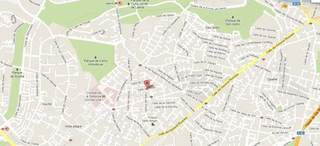
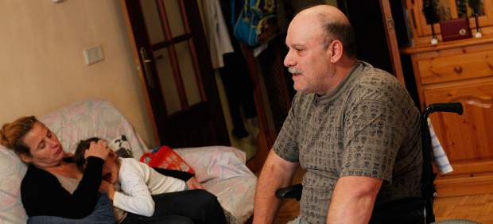
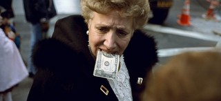
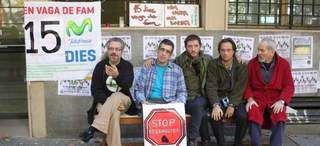
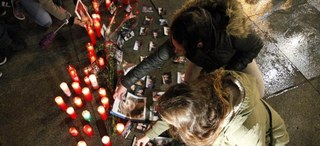
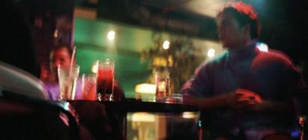
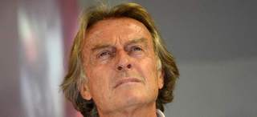
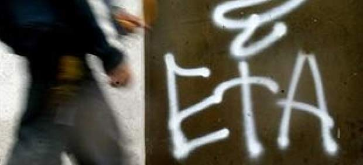

2012-11-19T20:55:35Z
Admiten a trámite la demanda de un millar de accionistas de Bankia contra Deloitte
Admiten a trámite la demanda de un millar de accionistas de Bankia contra Deloitte
NICOLÁS M. SARRIÉS
La causa fue promovida por el Sindicato de Accionistas de Bankia (Sacub).
Acusan a la auditora de negligencia y no alertar de la situación real del banco.
Reclaman a Deloitte responsabilidad civil por los daños y perjuicios ocasionados.
El juzgado de lo mercantil nº 9 de Madrid ha admitido a trámite la demanda civil iniciada por cerca de un millar de empleados y accionistas de Bankia -unidos a través del Sindicato Sacub- contra la auditora Deloitte, a la que acusan de "negligencia" por no haber informado y alertado a los inversores de la verdadera situación patrimonial de la entidad presidida por Rodrigo Rato durante su salida a bolsa.En el escrito de demanda se acusa a Deloitte de no cumplir con su labor de auditar y de llevar a cabo "una actuación antijurídica derivada del incumplimiento de los deberes profesionales que le impone el ordenamiento jurídico, emitiendo un informe injustificadamente favorable, omitiendo salvedades sobre irregularidades en la gestión de Bankia o sobre hechos que suponían un riesgo para la situación financiera", recalca el texto.Así, con estos informes favorables, se generó una falsa confianza entre los inversores, la cual les llevó a "invertir en una sociedad que a posteriori se ha revelado con una situación patrimonial y financiera deficiente, muy alejada de la reflejada en las cuentas anuales informadas hasta un determinado momento por Deloitte", concluyen.Una inversión con un 70% de pérdidasEl Sacub reclama a la firma estadounidense responsabilidad civil por los daños y perjuicios ocasionados a los inversores, que compraron acciones de Bankia a 3,75 euros en el momento de su salida al mercado con la creencia de que la entidad era solvente. Actualmente estas participaciones han perdido más de un 70% de su valor. "El caso es muy claro; de libro", asegura Ismael Oliver, abogado y portavoz del millar de accionistas que forman el Sacub. En su opinión, "hay una clara dejación de funciones y la auditora no dijo la verdad sobre los estados contables de BFA-Bankia. En tan pocos meses no pueden aflorar unas pérdidas de tantos millones", sostiene, al tiempo que no descarta que además de la vía civil pueda haber una exigencia de responsabilidad penal a Deloitte.Así, tras la admisión judicial ahora Deloitte -que a preguntas de este diario prefirió no hacer ningún tipo de declaración- cuenta con 20 días para dar respuesta a estas acusaciones. Hasta este momento, la única implicación de la firma en el caso BFA-Bankia ha consistido en la comparecencia como testigo de su representante en las auditorías al sector financiero, Francisco Celma.Esta no es el primer frente judicial abierto por el Sacub, ya que, tal como adelantó 20 minutos, hace apenas dos meses empleados y accionistas se personaron como acusación particular en el juicio contra la cúpula de BFA-Bankia instruido por el juez de la Audiencia Nacional Fernando Andreu, y en la que tanto UPyD y como la Fiscalía ejercen de acusación popular.
NICOLÁS M. SARRIÉS
- La causa fue promovida por el Sindicato de Accionistas de Bankia (Sacub).
- Acusan a la auditora de negligencia y no alertar de la situación real del banco.
- Reclaman a Deloitte responsabilidad civil por los daños y perjuicios ocasionados.
El juzgado de lo mercantil nº 9 de Madrid ha admitido a trámite la demanda civil iniciada por cerca de un millar de empleados y accionistas de Bankia -unidos a través del Sindicato Sacub- contra la auditora Deloitte, a la que acusan de "negligencia" por no haber informado y alertado a los inversores de la verdadera situación patrimonial de la entidad presidida por Rodrigo Rato durante su salida a bolsa.
En el escrito de demanda se acusa a Deloitte de no cumplir con su labor de auditar y de llevar a cabo "una actuación antijurídica derivada del incumplimiento de los deberes profesionales que le impone el ordenamiento jurídico, emitiendo un informe injustificadamente favorable, omitiendo salvedades sobre irregularidades en la gestión de Bankia o sobre hechos que suponían un riesgo para la situación financiera", recalca el texto.
Así, con estos informes favorables, se generó una falsa confianza entre los inversores, la cual les llevó a "invertir en una sociedad que a posteriori se ha revelado con una situación patrimonial y financiera deficiente, muy alejada de la reflejada en las cuentas anuales informadas hasta un determinado momento por Deloitte", concluyen.
Una inversión con un 70% de pérdidas
El Sacub reclama a la firma estadounidense responsabilidad civil por los daños y perjuicios ocasionados a los inversores, que compraron acciones de Bankia a 3,75 euros en el momento de su salida al mercado con la creencia de que la entidad era solvente. Actualmente estas participaciones han perdido más de un 70% de su valor.
"El caso es muy claro; de libro", asegura Ismael Oliver, abogado y portavoz del millar de accionistas que forman el Sacub. En su opinión, "hay una clara dejación de funciones y la auditora no dijo la verdad sobre los estados contables de BFA-Bankia. En tan pocos meses no pueden aflorar unas pérdidas de tantos millones", sostiene, al tiempo que no descarta que además de la vía civil pueda haber una exigencia de responsabilidad penal a Deloitte.
Así, tras la admisión judicial ahora Deloitte -que a preguntas de este diario prefirió no hacer ningún tipo de declaración- cuenta con 20 días para dar respuesta a estas acusaciones. Hasta este momento, la única implicación de la firma en el caso BFA-Bankia ha consistido en la comparecencia como testigo de su representante en las auditorías al sector financiero, Francisco Celma.
Esta no es el primer frente judicial abierto por el Sacub, ya que, tal como adelantó 20 minutos, hace apenas dos meses empleados y accionistas se personaron como acusación particular en el juicio contra la cúpula de BFA-Bankia instruido por el juez de la Audiencia Nacional Fernando Andreu, y en la que tanto UPyD y como la Fiscalía ejercen de acusación popular.
2012-11-19T20:10:59Z
Muere una mujer de 54 años intoxicada debido a la mala combustión de una estufa
Muere una mujer de 54 años intoxicada debido a la mala combustión de una estufa
EFE
Una compañera de piso de la víctima ha llegado a la vivienda, situada en Carabanchel, y se ha encontrado a la mujer inconsciente.
Los sanitarios que han acudido al domicilio han encontrado ya muerta a la mujer.
Una mujer de 54 años ha fallecido este lunes en Carabanchel intoxicada por monóxido de carbono debido a la mala combustión de un estufa en su domicilio, una tercera planta de la calle de Pinzón.Según ha informado a Efe Emergencias Comunidad de Madrid 112, el suceso ha tenido lugar poco antes de las 17 horas, cuando una compañera de piso de la víctima ha llegado a la vivienda y se ha encontrado a la mujer inconsciente.Tras recibir la llamada, el 112 ha enviado una UVI móvil del Summa, cuyos sanitarios han encontrado ya muerta a la mujer, sin posibilidad alguna de reanimación.Los primeros indicios apuntan a que la mujer falleció por inhalación de monóxido de carbono procedente de la deficiente combustión de una estufa.
EFE
- Una compañera de piso de la víctima ha llegado a la vivienda, situada en Carabanchel, y se ha encontrado a la mujer inconsciente.
- Los sanitarios que han acudido al domicilio han encontrado ya muerta a la mujer.

Una mujer de 54 años ha fallecido este lunes en Carabanchel intoxicada por monóxido de carbono debido a la mala combustión de un estufa en su domicilio, una tercera planta de la calle de Pinzón.
Según ha informado a Efe Emergencias Comunidad de Madrid 112, el suceso ha tenido lugar poco antes de las 17 horas, cuando una compañera de piso de la víctima ha llegado a la vivienda y se ha encontrado a la mujer inconsciente.
Tras recibir la llamada, el 112 ha enviado una UVI móvil del Summa, cuyos sanitarios han encontrado ya muerta a la mujer, sin posibilidad alguna de reanimación.
Los primeros indicios apuntan a que la mujer falleció por inhalación de monóxido de carbono procedente de la deficiente combustión de una estufa.
2012-11-19T18:55:52Z
Zan Tabak ficha como nuevo entrenador del Caja Laboral
Zan Tabak ficha como nuevo entrenador del Caja Laboral
EFE
El expívot croata ha firmado por lo que resta de temporada y un año más.
Sustituye a Dusko Ivanovic, que fue destituido de su cargo este domingo.
Tabak debutará este viernes en el partido de la Euroliga ante el Zalgiris.
El técnico croata Zan Tabak es el nuevo entrenador del Caja Laboral, después de que este domingo el club destituyera a Dusko Ivanovic tras la derrota de los vitorianos en casa frente al Blusens Monbus (68-77).Tabak (Split, Croacia, 1970) se ha comprometido con el club alavés por lo que resta de temporada y un año más, según ha informado el club en una nota.El nuevo entrenador llega a Vitoria procedente del equipo polaco Trefl Sopot.La carrera de Tabak en los banquillos ha estado ligada a Joan Plaza, como entrenador asistente, tanto en el Real Madrid como en el Cajasol. En la pasada temporada (2011-12) se convirtió en técnico del CB Sant Joseph de Girona en la LEB Oro. El Caja Laboral será el primer equipo en la ACB bajo sus órdenes.Una gran trayectoria como jugadorComo jugador, Tabak ganó tres Copas de Europa con la Jugoplastika y un anillo de la NBA con los Houston Rockets. Finalizó su carrera en la liga ACB, donde jugó en el Real Madrid, el DKV Juventut y el Unicaja de Málaga.El primer partido que el Caja Laboral disputará bajo la batuta del nuevo técnico será este viernes, cuando el equipo vitoriano se enfrente al Zalgiris en la Euroliga.El anterior técnico baskonista, Dusko Ivanovic, fue destituido después de que los vitorianos perdieran su octavo partido de los catorce disputados esta temporada entre la Liga Endesa y la Euroliga.Bajo la dirección de Ivanovic, que ha cumplido en Vitoria diez temporadas, el Caja Laboral ha logrado dos títulos de Liga, tres Copas del Rey y una Supercopa. Además, llevó al conjunto a disputar la Final a Cuatro de la Euroliga.
EFE
- El expívot croata ha firmado por lo que resta de temporada y un año más.
- Sustituye a Dusko Ivanovic, que fue destituido de su cargo este domingo.
- Tabak debutará este viernes en el partido de la Euroliga ante el Zalgiris.
El técnico croata Zan Tabak es el nuevo entrenador del Caja Laboral, después de que este domingo el club destituyera a Dusko Ivanovic tras la derrota de los vitorianos en casa frente al Blusens Monbus (68-77).
Tabak (Split, Croacia, 1970) se ha comprometido con el club alavés por lo que resta de temporada y un año más, según ha informado el club en una nota.
El nuevo entrenador llega a Vitoria procedente del equipo polaco Trefl Sopot.
La carrera de Tabak en los banquillos ha estado ligada a Joan Plaza, como entrenador asistente, tanto en el Real Madrid como en el Cajasol. En la pasada temporada (2011-12) se convirtió en técnico del CB Sant Joseph de Girona en la LEB Oro. El Caja Laboral será el primer equipo en la ACB bajo sus órdenes.
Una gran trayectoria como jugador
Como jugador, Tabak ganó tres Copas de Europa con la Jugoplastika y un anillo de la NBA con los Houston Rockets. Finalizó su carrera en la liga ACB, donde jugó en el Real Madrid, el DKV Juventut y el Unicaja de Málaga.
El primer partido que el Caja Laboral disputará bajo la batuta del nuevo técnico será este viernes, cuando el equipo vitoriano se enfrente al Zalgiris en la Euroliga.
El anterior técnico baskonista, Dusko Ivanovic, fue destituido después de que los vitorianos perdieran su octavo partido de los catorce disputados esta temporada entre la Liga Endesa y la Euroliga.
Bajo la dirección de Ivanovic, que ha cumplido en Vitoria diez temporadas, el Caja Laboral ha logrado dos títulos de Liga, tres Copas del Rey y una Supercopa. Además, llevó al conjunto a disputar la Final a Cuatro de la Euroliga.
2012-11-19T18:30:58Z
Daniel Craig es el James Bond mejor pagado de la historia
Daniel Craig es el James Bond mejor pagado de la historia
EFE
Aún teniendo en cuenta la inflación, el actor inglés es el agente 007 mejor pagado, con una media por película de 12 millones de euros.
Sean Connery se llevó 12.446 euros en la primera película de la serie, 'Doctor No', hace ahora 50 años y al cambio, una media de 4 millones por filme.
El actor Daniel Craig se ha convertido en el James Bond mejor pagado en los 50 años de historia de esta saga cinematográfica y recibirá 31 millones de libras (38.583.220 euros, 49.332.532 dólares) por ponerse en la piel del agente en otras dos ocasiones.El caché del actor británico, uno de los mejores pagados del mundo, aumentó tras el éxito de crítica y público de la última entrega de la saga, Skyfall, el mejor estreno del año en el Reino Unido con 57 millones de libras (70.943.340 euros, 90.708.204 dólares) recaudadas en doce días, según recogen hoy los medios británicos.Por esta última película, Craig cobró un total de 10,7 millones de libras (13,3 millones de euros, 17 millones de dólares), tres millones (3,73 millones de euros; 4,76 millones de dólares) más de lo que se embolsó en 1999 Pierce Brosnan por The World Is Not Enough (El mundo nunca es suficiente).Daniel Craig ha superado a todos sus antecesores como Bond con una media por película de 9,6 millones de libras (12 millones de euros; 15,34 millones de dólares), lo que lo convierte en uno de los actores de Hollywood mejor pagados, solo detrás de Leonardo DiCaprio y Tom Cruise, según el Daily Telegraph.El intérprete inglés, de 44 años, ganó 1,9 millones de libras (2,36 millones de euros; 3,01 millones de dólares) en su primera película como 007, Casino Royale, y 4,4 millones (5,47 millones de euros; 6,99 millones de dólares) por Quantum of Solace.Pese a la inflación, el salario que recibe el intérprete del agente del MI6 ha aumentado exponencialmente desde que Sean Connery se llevara 10.000 libras (12.446 euros; 15.913 dólares) en la primera película de la serie, Doctor No, hace ahora 50 años.Equiparándolos a los precios de hoy en día, Connery ganó una media de 3,2 millones de libras (4 millones de euros; 5,11 millones de dólares), Roger Moore 6,3 millones (7,84 millones de euros; 10,02 millones de dólares), Thimoty Dalton 5,4 millones (6,72 millones de euros; 8,59 millones de dólares) y Brosnan 8,7 millones (10,82 millones de euros; 13,83 millones de dólares), informa hoy el diario The Independent.
EFE
- Aún teniendo en cuenta la inflación, el actor inglés es el agente 007 mejor pagado, con una media por película de 12 millones de euros.
- Sean Connery se llevó 12.446 euros en la primera película de la serie, 'Doctor No', hace ahora 50 años y al cambio, una media de 4 millones por filme.
El actor Daniel Craig se ha convertido en el James Bond mejor pagado en los 50 años de historia de esta saga cinematográfica y recibirá 31 millones de libras (38.583.220 euros, 49.332.532 dólares) por ponerse en la piel del agente en otras dos ocasiones.
El caché del actor británico, uno de los mejores pagados del mundo, aumentó tras el éxito de crítica y público de la última entrega de la saga, Skyfall, el mejor estreno del año en el Reino Unido con 57 millones de libras (70.943.340 euros, 90.708.204 dólares) recaudadas en doce días, según recogen hoy los medios británicos.
Por esta última película, Craig cobró un total de 10,7 millones de libras (13,3 millones de euros, 17 millones de dólares), tres millones (3,73 millones de euros; 4,76 millones de dólares) más de lo que se embolsó en 1999 Pierce Brosnan por The World Is Not Enough (El mundo nunca es suficiente).
Daniel Craig ha superado a todos sus antecesores como Bond con una media por película de 9,6 millones de libras (12 millones de euros; 15,34 millones de dólares), lo que lo convierte en uno de los actores de Hollywood mejor pagados, solo detrás de Leonardo DiCaprio y Tom Cruise, según el Daily Telegraph.
El intérprete inglés, de 44 años, ganó 1,9 millones de libras (2,36 millones de euros; 3,01 millones de dólares) en su primera película como 007, Casino Royale, y 4,4 millones (5,47 millones de euros; 6,99 millones de dólares) por Quantum of Solace.
Pese a la inflación, el salario que recibe el intérprete del agente del MI6 ha aumentado exponencialmente desde que Sean Connery se llevara 10.000 libras (12.446 euros; 15.913 dólares) en la primera película de la serie, Doctor No, hace ahora 50 años.
Equiparándolos a los precios de hoy en día, Connery ganó una media de 3,2 millones de libras (4 millones de euros; 5,11 millones de dólares), Roger Moore 6,3 millones (7,84 millones de euros; 10,02 millones de dólares), Thimoty Dalton 5,4 millones (6,72 millones de euros; 8,59 millones de dólares) y Brosnan 8,7 millones (10,82 millones de euros; 13,83 millones de dólares), informa hoy el diario The Independent.
2012-11-19T18:14:45Z
El Gobierno de Castilla-La Mancha ofrece a la familia de Teo una vivienda de protección oficial
El Gobierno de Castilla-La Mancha ofrece a la familia de Teo una vivienda de protección oficial
JUANMA LÓPEZ-GUILLÉN
Teodoro Expósito, parapléjico de 52 años que vive en Toledo, explicó a '20 minutos' a principios de octubre la situación crítica que vive su familia.
Los recortes en dependencia le afectan directamente, pero también a Marcos y Jenifer, sus dos hijos enfermos.
Más de un centenar de lectores de este periódico se pusieron en contacto con la familia para echarles una mano.
Teodoro Expósito, un parapléjico de 52 años que vive en Toledo, explicó a 20 minutos a principios de octubre la situación crítica que vive su familia. Los recortes en dependencia le afectan directamente, pero también a sus dos hijos enfermos. Poco después de conocerse la noticia, más de un centenar de lectores de este periódico se pusieron en contacto con la familia para echarles una mano.El pasado 1 de octubre Teo denunció que iba a perder su vivienda debido a que las ayudas en dependencia se habían reducido tanto que no podían seguir pagándola. Además de a Teo, la situación afectaba a su mujer y sus dos hijos: Marcos, en estado vegetativo casi de nacimiento por culpa de una meningitis, y Jenifer, que padece una parálisis cerebral. Al conocer la noticia, los lectores de 20 minutos se volcaron con esta familia y les enviaron, tras ponerse en contacto con este periódico, pequeñas aportaciones mensuales, envíos de comida, ayudas a domicilio... Mes y medio más tarde, la Consejería de Fomento de Castilla-La Mancha ha escuchado sus plegarias y les ha concedido una Vivienda de Protección Oficial (VPO).Teo y los suyos conocieron la noticia este domingo y verán la vivienda que tiene cuatro habitaciones y está situada en la ciudad de Toledo este mismo martes. Según explicaron a este diario fuentes del Gobierno manchego (PP), Teo pasará de pagar de los casi 700 euros mensuales que costaba el alquiler del piso en anterior, a unos 400.Un fallo burocrático del PSOE, según el PPSegún estas fuentes, la familia de Teodoro no ha recibido antes la casa porque la solicitud fue presentada el pasado mes de julio. Aseguran que el antiguo Gobierno (PSOE) dio de baja la solicitud presentada por Teodoro en 2007. Según cuentan, Teo volvió a dar de alta la solicitud en julio y, finalmente, meses después ha logrado una vivienda.
JUANMA LÓPEZ-GUILLÉN
- Teodoro Expósito, parapléjico de 52 años que vive en Toledo, explicó a '20 minutos' a principios de octubre la situación crítica que vive su familia.
- Los recortes en dependencia le afectan directamente, pero también a Marcos y Jenifer, sus dos hijos enfermos.
- Más de un centenar de lectores de este periódico se pusieron en contacto con la familia para echarles una mano.

Teodoro Expósito, un parapléjico de 52 años que vive en Toledo, explicó a 20 minutos a principios de octubre la situación crítica que vive su familia. Los recortes en dependencia le afectan directamente, pero también a sus dos hijos enfermos. Poco después de conocerse la noticia, más de un centenar de lectores de este periódico se pusieron en contacto con la familia para echarles una mano.
El pasado 1 de octubre Teo denunció que iba a perder su vivienda debido a que las ayudas en dependencia se habían reducido tanto que no podían seguir pagándola. Además de a Teo, la situación afectaba a su mujer y sus dos hijos: Marcos, en estado vegetativo casi de nacimiento por culpa de una meningitis, y Jenifer, que padece una parálisis cerebral.
Al conocer la noticia, los lectores de 20 minutos se volcaron con esta familia y les enviaron, tras ponerse en contacto con este periódico, pequeñas aportaciones mensuales, envíos de comida, ayudas a domicilio... Mes y medio más tarde, la Consejería de Fomento de Castilla-La Mancha ha escuchado sus plegarias y les ha concedido una Vivienda de Protección Oficial (VPO).
Teo y los suyos conocieron la noticia este domingo y verán la vivienda que tiene cuatro habitaciones y está situada en la ciudad de Toledo este mismo martes. Según explicaron a este diario fuentes del Gobierno manchego (PP), Teo pasará de pagar de los casi 700 euros mensuales que costaba el alquiler del piso en anterior, a unos 400.
Un fallo burocrático del PSOE, según el PP
Según estas fuentes, la familia de Teodoro no ha recibido antes la casa porque la solicitud fue presentada el pasado mes de julio. Aseguran que el antiguo Gobierno (PSOE) dio de baja la solicitud presentada por Teodoro en 2007. Según cuentan, Teo volvió a dar de alta la solicitud en julio y, finalmente, meses después ha logrado una vivienda.
2012-11-19T17:46:26Z
Quince fotógrafos interpretan en color el 'momento decisivo' que proponía Cartier-Bresson
Quince fotógrafos interpretan en color el 'momento decisivo' que proponía Cartier-Bresson
ÁNXEL GROVE
El maestro francés despreciaba la fotografía a color y sólo la consideraba admisible para trabajos comerciales.
Exponen en Londres obras de artistas que demostraron ese error de apreciación.
Algunos, como Helen Levitt y Ernst Haas, eran amigos de Cartier-Bresson.
Considerado por algunos como el mejor fotógrafo de la historia y alabado sin discusión como uno de los más brillantes, Henri Cartier-Bresson (1908-2004) pecaba en ocasiones de maximalismo. Si su teoría del momento decisivo ("retener el aliento y esperar a la que todas las facultades converjan en la cara de la realidad cambiante") es poco más que una verdad poética que puede ser desarrollada a través de variados acercamientos y técnicas, en otras afirmaciones el maestro pecó de intransigencia y ceguera. Por ejemplo, cuando afirmó que el color era una forma bastarda de expresión fotográfica que sólo estaba justificada para trabajos comerciales.Para demostrar que estaba profundamente equivocado, la exposición Cartier-Bresson: A Question of Colour (Cartier-Bresson: una cuestión de color) propone una mirada a la obra de quince fotógrafos fuertemente influidos por la idea del momento decisivo pero que trabajaron en color. Algunos fueron contemporáneos del francés e incluso, con el que mantenían, como en el caso de Helen Levitt y Ernst Haas, lazos de amistad. La muestra, que se celebra en la Somerset House de Londres (Reino Unido) hasta el 27 de enero de 2013, es la primera que organiza la Positive View Foundation, una organización benéfica inglesa de ayuda a jóvenes con discapacidades."Una disección anatómica chapucera"Lo más duro que afirmó el muy amigo de teorizar Cartier-Bresson sobre el color fue: "Una foto a color reproducida en una revista o edición lujosa me da la impresión de una disección anatómica chapucera". La declaración es de los años cincuenta del siglo XX y es verdad que entonces las fotos en color todavía no habían alcanzado un desarrollo técnico que pudiera equipararlas al blanco y negro, pero también es cierto que el maestro nunca dió su brazo a torcer y, pese a que siguió en la brecha hasta los setenta, cuando dejó las fotos por el dibujo, nunca hizo una foto a color ni se desdijo de sus atropelladas opiniones. La exposición de Londres demuestra que estaba equivocado al ser despectivo y que su magisterio sobre captar lo que sucede en el momento exacto y en la forma correcta sí fue seguido por profesionales de la foto que optaron por la película a color como soporte. En la muestra se expondrán 75 obras de una quincena de autores, entre ellos, además de Haas y Levitt, Andy Freeberg, Harry Gruyaert, Fred Herzog, Saul Leiter, Trent Parke y Alex Webb.Junto a estas piezas y para que la comparación sea posible, habrá una decena de copias originales de Cartier-Bresson que nunca antes habían sido exhibidas en el Reino Unido."Desafío y respuesta"El conservador William E. Ewing afirma que concibe la exposición en términos "desafío y respuesta", porque "mostrará como Cartier-Bresson, a pesar de su escepticismo sobre el valor artístico de la fotografía en color, ejerció una poderosa influencia sobre los fotógrafos que optaron por el nuevo medio y que estaban decididos a poner un sello personal en él". Las críticas del reportero francés, según el responsable de la muestra, tuvieron el efecto contrario al que perseguían e "impulsaron a una nueva generación de fotógrafos, decididos a superar los obstáculos y demostrar que estaba equivocado. La exposición es un homenaje a un maestro que sintió que la fotografía en blanco y negro era el medio ideal y no podía ser mejorado, pero también un homenaje a un grupo de fotógrafos de los siglos XX y XXI que eligieron el camino del color con un compromiso tan serio como el de Cartier-Bresson con el blanco y negro".Cartier-Bresson pensaba que hasta el momento decisivo el fotógrafo ha de esperar con paciencia y valor y era un devoto de la precisión. Todas sus fotos contienen los elementos clave: luz y sombra, composición rigurosa, número áureo y don de la oportunidad. Llamaba a la perfecta combinación de todos estos factores "la geometría del momento". Si en esas leyes estaba en lo cierto lo cual también es discutible, la exposición londinense demuestra que patinaba de pleno en sus opiniones sobre el color.
ÁNXEL GROVE
- El maestro francés despreciaba la fotografía a color y sólo la consideraba admisible para trabajos comerciales.
- Exponen en Londres obras de artistas que demostraron ese error de apreciación.
- Algunos, como Helen Levitt y Ernst Haas, eran amigos de Cartier-Bresson.

Considerado por algunos como el mejor fotógrafo de la historia y alabado sin discusión como uno de los más brillantes, Henri Cartier-Bresson (1908-2004) pecaba en ocasiones de maximalismo. Si su teoría del momento decisivo ("retener el aliento y esperar a la que todas las facultades converjan en la cara de la realidad cambiante") es poco más que una verdad poética que puede ser desarrollada a través de variados acercamientos y técnicas, en otras afirmaciones el maestro pecó de intransigencia y ceguera. Por ejemplo, cuando afirmó que el color era una forma bastarda de expresión fotográfica que sólo estaba justificada para trabajos comerciales.
Para demostrar que estaba profundamente equivocado, la exposición Cartier-Bresson: A Question of Colour (Cartier-Bresson: una cuestión de color) propone una mirada a la obra de quince fotógrafos fuertemente influidos por la idea del momento decisivo pero que trabajaron en color. Algunos fueron contemporáneos del francés e incluso, con el que mantenían, como en el caso de Helen Levitt y Ernst Haas, lazos de amistad. La muestra, que se celebra en la Somerset House de Londres (Reino Unido) hasta el 27 de enero de 2013, es la primera que organiza la Positive View Foundation, una organización benéfica inglesa de ayuda a jóvenes con discapacidades.
"Una disección anatómica chapucera"
Lo más duro que afirmó el muy amigo de teorizar Cartier-Bresson sobre el color fue: "Una foto a color reproducida en una revista o edición lujosa me da la impresión de una disección anatómica chapucera". La declaración es de los años cincuenta del siglo XX y es verdad que entonces las fotos en color todavía no habían alcanzado un desarrollo técnico que pudiera equipararlas al blanco y negro, pero también es cierto que el maestro nunca dió su brazo a torcer y, pese a que siguió en la brecha hasta los setenta, cuando dejó las fotos por el dibujo, nunca hizo una foto a color ni se desdijo de sus atropelladas opiniones.
La exposición de Londres demuestra que estaba equivocado al ser despectivo y que su magisterio sobre captar lo que sucede en el momento exacto y en la forma correcta sí fue seguido por profesionales de la foto que optaron por la película a color como soporte. En la muestra se expondrán 75 obras de una quincena de autores, entre ellos, además de Haas y Levitt, Andy Freeberg, Harry Gruyaert, Fred Herzog, Saul Leiter, Trent Parke y Alex Webb.
Junto a estas piezas y para que la comparación sea posible, habrá una decena de copias originales de Cartier-Bresson que nunca antes habían sido exhibidas en el Reino Unido.
"Desafío y respuesta"
El conservador William E. Ewing afirma que concibe la exposición en términos "desafío y respuesta", porque "mostrará como Cartier-Bresson, a pesar de su escepticismo sobre el valor artístico de la fotografía en color, ejerció una poderosa influencia sobre los fotógrafos que optaron por el nuevo medio y que estaban decididos a poner un sello personal en él".
Las críticas del reportero francés, según el responsable de la muestra, tuvieron el efecto contrario al que perseguían e "impulsaron a una nueva generación de fotógrafos, decididos a superar los obstáculos y demostrar que estaba equivocado. La exposición es un homenaje a un maestro que sintió que la fotografía en blanco y negro era el medio ideal y no podía ser mejorado, pero también un homenaje a un grupo de fotógrafos de los siglos XX y XXI que eligieron el camino del color con un compromiso tan serio como el de Cartier-Bresson con el blanco y negro".
Cartier-Bresson pensaba que hasta el momento decisivo el fotógrafo ha de esperar con paciencia y valor y era un devoto de la precisión. Todas sus fotos contienen los elementos clave: luz y sombra, composición rigurosa, número áureo y don de la oportunidad. Llamaba a la perfecta combinación de todos estos factores "la geometría del momento". Si en esas leyes estaba en lo cierto lo cual también es discutible, la exposición londinense demuestra que patinaba de pleno en sus opiniones sobre el color.
2012-11-19T17:29:03Z
El cantante Manolo Escobar: "Cuando termine la próxima 'tournée', me retiro"
El cantante Manolo Escobar: "Cuando termine la próxima 'tournée', me retiro"
MANUEL CARRETERO / EFE
El cantante planea una última gira en la que le gustaría visitar "todos los sitios importantes" de su vida.
Nacido en Almería, pero criado en Barcelona y residente en Madrid, opina que la situación en Cataluña "no ha cambiado tanto", si bien la crisis ha afectado a todo.
En escasas figuras del folclore español se han dado la mano con tanto éxito lo festivo, lo racial y lo sentimental como en Manolo Escobar, quien ha anunciado su retirada de los escenarios al término de su próxima gira, seguro de que la copla "no se perderá nunca porque es parte de la cultura". "Cuando termine la próxima tournée, me retiro, pero con lo grande que es España, la gira lo mismo dura un año que dos", ha explicado en una entrevista telefónica el popular artista, quien a sus 80 años, y tras más de medio siglo en activo, se ha convertido en un símbolo de la cultura popular.Y mientras prepara esa gira con la que le gustaría visitar "todos los sitios importantes" de su vida, sigue al pie del cañón con su espectáculo Antología de la copla, que acaba de presentar en Barcelona y llevará a Vilafranca del Penedés el próximo sábado, ayudado por ahora por una "muletita", porque la cadera de la que fue operado en marzo le sigue llevando "por la calle de la amargura".En sus conciertos no pueden faltar los clásicos que invariablemente le piden tanto "las personas mayores" como "las jóvenes, que son admiradoras a través de sus padres". Canciones como Porompompero, En tierra extraña, La minifalda, Madrecita María del Carmen, Mi carro y, por supuesto, Y viva España.¿Y cómo ve el país este artista almeriense (El Ejido, 1931) que se crió en Barcelona y en 1963 se instaló en Madrid? "Veo a España un poco desquiciada -afirma-, y espero y deseo que los españoles, que tienen sentido común, lo arreglen lo más rápidamente posible".En concreto, sobre la actual situación en Cataluña, explica que "la cosa no ha cambiado tanto, lo que pasa es que atravesamos un momento de crisis, que se nota tanto ahí como en cualquier sitio".Su próximo espectáculo, el de la despedida, incluirá temas de todas las épocas, aunque se extraña de los años que han pasado desde su último disco, Manolo Escobar (2002). "¿Tanto?", pregunta a su asistente, y después recuerda que ha grabado más canciones, aunque para elepés junto a otros artistas. Para su última tourné no descarta tampoco destinos internacionales, porque sus canciones traspasaron las fronteras españolas al punto de que en 1986 el Instituto Gallup le situó entre los 50 artistas con más ventas en todo el mundo; y eso pese a que su racial Mi carro, recuerda, "no se entendía mucho por ahí, tal vez porque al automóvil le llaman carro en América".Su retirada de los escenarios no implica que no se pase por los estudios; "seguiré grabando canciones, porque entre otras tengo que grabar una para mi nieta, que está preciosa", afirma con seguridad, la misma con la que señala que la copla no desaparecerá nunca: "Es parte de la cultura, y la cultura de un pueblo no se pierde".El artista almeriense, que ha conseguido 40 discos de Oro por sus ventas, confiesa que el premio que más ilusión le ha hecho en su carrera es la Medalla de Oro al Mérito al Trabajo, que recibió en 2011, por ser "un reconocimiento" a su labor "de toda la vida".Y en ello sigue pese a sus problemas de salud -"el cáncer va bien, porque me sigo dando quimio", apunta sobre el tumor de colon del que fue operado en 2010-, y recuerda otra próxima actuación en Zaragoza (2 de diciembre) con su Antología de la copla, un espectáculo que estará en activo "mientras tenga éxito y la gente quiera verlo", concluye.
MANUEL CARRETERO / EFE
- El cantante planea una última gira en la que le gustaría visitar "todos los sitios importantes" de su vida.
- Nacido en Almería, pero criado en Barcelona y residente en Madrid, opina que la situación en Cataluña "no ha cambiado tanto", si bien la crisis ha afectado a todo.
En escasas figuras del folclore español se han dado la mano con tanto éxito lo festivo, lo racial y lo sentimental como en Manolo Escobar, quien ha anunciado su retirada de los escenarios al término de su próxima gira, seguro de que la copla "no se perderá nunca porque es parte de la cultura".
"Cuando termine la próxima tournée, me retiro, pero con lo grande que es España, la gira lo mismo dura un año que dos", ha explicado en una entrevista telefónica el popular artista, quien a sus 80 años, y tras más de medio siglo en activo, se ha convertido en un símbolo de la cultura popular.
Y mientras prepara esa gira con la que le gustaría visitar "todos los sitios importantes" de su vida, sigue al pie del cañón con su espectáculo Antología de la copla, que acaba de presentar en Barcelona y llevará a Vilafranca del Penedés el próximo sábado, ayudado por ahora por una "muletita", porque la cadera de la que fue operado en marzo le sigue llevando "por la calle de la amargura".
En sus conciertos no pueden faltar los clásicos que invariablemente le piden tanto "las personas mayores" como "las jóvenes, que son admiradoras a través de sus padres". Canciones como Porompompero, En tierra extraña, La minifalda, Madrecita María del Carmen, Mi carro y, por supuesto, Y viva España.
¿Y cómo ve el país este artista almeriense (El Ejido, 1931) que se crió en Barcelona y en 1963 se instaló en Madrid? "Veo a España un poco desquiciada -afirma-, y espero y deseo que los españoles, que tienen sentido común, lo arreglen lo más rápidamente posible".
En concreto, sobre la actual situación en Cataluña, explica que "la cosa no ha cambiado tanto, lo que pasa es que atravesamos un momento de crisis, que se nota tanto ahí como en cualquier sitio".
Su próximo espectáculo, el de la despedida, incluirá temas de todas las épocas, aunque se extraña de los años que han pasado desde su último disco, Manolo Escobar (2002). "¿Tanto?", pregunta a su asistente, y después recuerda que ha grabado más canciones, aunque para elepés junto a otros artistas.
Para su última tourné no descarta tampoco destinos internacionales, porque sus canciones traspasaron las fronteras españolas al punto de que en 1986 el Instituto Gallup le situó entre los 50 artistas con más ventas en todo el mundo; y eso pese a que su racial Mi carro, recuerda, "no se entendía mucho por ahí, tal vez porque al automóvil le llaman carro en América".
Su retirada de los escenarios no implica que no se pase por los estudios; "seguiré grabando canciones, porque entre otras tengo que grabar una para mi nieta, que está preciosa", afirma con seguridad, la misma con la que señala que la copla no desaparecerá nunca: "Es parte de la cultura, y la cultura de un pueblo no se pierde".
El artista almeriense, que ha conseguido 40 discos de Oro por sus ventas, confiesa que el premio que más ilusión le ha hecho en su carrera es la Medalla de Oro al Mérito al Trabajo, que recibió en 2011, por ser "un reconocimiento" a su labor "de toda la vida".
Y en ello sigue pese a sus problemas de salud -"el cáncer va bien, porque me sigo dando quimio", apunta sobre el tumor de colon del que fue operado en 2010-, y recuerda otra próxima actuación en Zaragoza (2 de diciembre) con su Antología de la copla, un espectáculo que estará en activo "mientras tenga éxito y la gente quiera verlo", concluye.
2012-11-19T17:24:31Z
Odriozola, cerca de otro mandato en la Federación de Atletismo
Odriozola, cerca de otro mandato en la Federación de Atletismo
20MINUTOS.ES
Los resultados de las elecciones a la asamblea de la RFEA, favorables.
Una estimación de su entorno le garantiza 97 votos sobre un total de 150.
El nuevo presidente será elegido el próximo 16 de diciembre.
Configurada la nueva asamblea de la Federación Española de Atletismo (RFEA) que el día 16 de diciembre votará a su nuevo presidente, dos de las tres precandidaturas valoran los resultados de la votación. "Tal y como ha quedado, parece que todo va a estar muy igualado", indica Martín Fiz, integrado en la lista que encabezan el exatleta Fermín Cacho y el directivo Alfredo Guerisoli. "Es difícil superar a José María Odriozola y tendremos que ver cómo enfocamos nuestros objetivos. Tenemos apoyos, pero no sabemos si van a ser los necesarios"."Hemos obtenido un resultado excelente, estamos muy contentos. Las fuentes oficiales (en alusión a la precandidatura de Odriozola) dicen una cosa, pero también decían que ni siquiera iba a haber elecciones. Al menos ya me reconocen 37 votos", explica el precandidato Vicente Añó.Una vez votada la asamblea, Odriozola, Añó y la 'entente' Cacho-Fiz-Guerisoli deben reunir los avales necesarios (un 15% entre los miembros, hasta 22 votos) para oficializar sus candidaturas a la presencia. "Hay bastante gente partidaria de un cambio", manifiesta Añó, que cuenta con dos apoyos electos en la asamblea: el entrenador José Luis López y el atleta Jesús Ángel García Bragado. El próximo mes resultará intenso en busca de soportes y votos.¿Muchas candidaturas?"Somos los que tenemos la llave para una balanza que se puede decantar de un lado o de otro y como se hace en política, habrá que negociar", valora un Fiz que cree que "tres candidaturas son muchas". Sobre esta apuesta, el 'rival' Añó esboza un posible apoyo: "Es posible que Miguel Ángel Mostaza, que ha sido su mánager, le vote, o algún atleta o algún club, pero no tiene posibilidades reales".En la candidatura de Odriozola se da por hecho el triunfo del actual presidente, a la vista de la composición de la asamblea. Según sus cálculos, 97 votarían a Odriozola, 26 a Vicente Añó y 23 permanecerían indecisos, un número insuficiente incluso con la fusión de dos de las precandidaturas. Odriozola afrontaría su séptimo mandato consecutivo y se consolidaría como la persona que más tiempo ha ejercido el cargo.
20MINUTOS.ES
- Los resultados de las elecciones a la asamblea de la RFEA, favorables.
- Una estimación de su entorno le garantiza 97 votos sobre un total de 150.
- El nuevo presidente será elegido el próximo 16 de diciembre.
Configurada la nueva asamblea de la Federación Española de Atletismo (RFEA) que el día 16 de diciembre votará a su nuevo presidente, dos de las tres precandidaturas valoran los resultados de la votación. "Tal y como ha quedado, parece que todo va a estar muy igualado", indica Martín Fiz, integrado en la lista que encabezan el exatleta Fermín Cacho y el directivo Alfredo Guerisoli. "Es difícil superar a José María Odriozola y tendremos que ver cómo enfocamos nuestros objetivos. Tenemos apoyos, pero no sabemos si van a ser los necesarios".
"Hemos obtenido un resultado excelente, estamos muy contentos. Las fuentes oficiales (en alusión a la precandidatura de Odriozola) dicen una cosa, pero también decían que ni siquiera iba a haber elecciones. Al menos ya me reconocen 37 votos", explica el precandidato Vicente Añó.
Una vez votada la asamblea, Odriozola, Añó y la 'entente' Cacho-Fiz-Guerisoli deben reunir los avales necesarios (un 15% entre los miembros, hasta 22 votos) para oficializar sus candidaturas a la presencia. "Hay bastante gente partidaria de un cambio", manifiesta Añó, que cuenta con dos apoyos electos en la asamblea: el entrenador José Luis López y el atleta Jesús Ángel García Bragado. El próximo mes resultará intenso en busca de soportes y votos.
¿Muchas candidaturas?
"Somos los que tenemos la llave para una balanza que se puede decantar de un lado o de otro y como se hace en política, habrá que negociar", valora un Fiz que cree que "tres candidaturas son muchas". Sobre esta apuesta, el 'rival' Añó esboza un posible apoyo: "Es posible que Miguel Ángel Mostaza, que ha sido su mánager, le vote, o algún atleta o algún club, pero no tiene posibilidades reales".
En la candidatura de Odriozola se da por hecho el triunfo del actual presidente, a la vista de la composición de la asamblea. Según sus cálculos, 97 votarían a Odriozola, 26 a Vicente Añó y 23 permanecerían indecisos, un número insuficiente incluso con la fusión de dos de las precandidaturas. Odriozola afrontaría su séptimo mandato consecutivo y se consolidaría como la persona que más tiempo ha ejercido el cargo.
2012-11-19T17:16:17Z
Cinco trabajadores de Telefónica están en huelga de hambre por el despido de un compañero
Cinco trabajadores de Telefónica están en huelga de hambre por el despido de un compañero
Maria Salgado 20m
Piden la readmisión de un empleado que sufre una hernia discal y fue despedido en 2011 tras varias bajas médicas y amparándose en la reforma laboral.
El trabajador le ganó dos juicios a la compañía, pero esta no lo ha readmitido.
Telefónica dice que "cumplió la sentencia del TSJ de Cataluña" al haber abonado una indemnización al trabajador por tratarse de un despido improcedente.
Este lunes es el décimoquinto día a base de agua y suero, y así piensan continuar hasta no se sabe cuándo. Cinco trabajadores de Teléfonica en Barcelona empiezan su tercera semana de huelga de hambre sine die en protesta por el despido improcedente de un compañero.Tras más de 20 años en la compañía, Marcos Andrés Armenteros, que sufre una hernia discal y causó varias bajas médicas justificadas, fue despedido en 2011 por la compañía, que se amparó en la reforma laboral y en el artículo 52d del Estatuto de los trabajadores, que permite echar a un empleado si acumula un 20% del tiempo de los últimos cuatro meses en bajas médicas.Armenteros denunció a Telefónica y los tribunales consideraron el despido nulo, por lo que fue readmitido. Sin embargo, tras ocho meses trabajando de nuevo, la empresa recurrió y el despido pasó de nulo a improcedente, por lo que se fue a la calle y está en el paro desde el pasado mes de julio. Además, se da la casualidad de que este empleado había salido elegido para ir de número tres en las listas del sindicato mayoritario Co.bas-ec (En construcción) cuando ya se había anunciado el ERE que afectaba a 6.500 trabajadores.Conscientes de que no se trata de un caso aislado, cuatro compañeros, también sindicalistas, se unieron a la protesta de Armenteros por solidaridad. Se trata de Laurentino González, Alberto Díez, Carles Bayena y Josep Bell. Este último ha explicado a 20minutos.es que este mismo lunes los ha visitado el médico y les ha dicho que deben hacerse controles cada tres para ir decidiendo si pueden continuar o no con la huelga de hambre. "Ya dijimos que esta protesta es sine die porque una empresa que tiene beneficios no puede anunciar despidos", asegura Bell. De hecho, Telefónica cuenta con unas ganancias millonarias y ha renovado su contrato al imputado Iñaki Urdangarin.El local del comité de empresa, en la calle Marqués del Campo Sagrado, 23, de Barcelona, es la casa de estos huelguistas desde hace 15 días y no se mueven de allí. "Nos han visitado representantes de varios partidos, como los de ICV, ERC, Solidaritat, las CUP e incluso Cayo Lara, de Izquierda Unida", explica Bell. Lara, que ha tachado el despido de Armenteros de "absolutamente injusto", ha recordado que la compañía, hace dos años, con diez mil millones de beneficios, despidió a 3.000 empleados.Además, han organizado varios actos de protesta con la flashmob del pasado martes. Unas 200 personas vestidas con camisetas azules y encapuchados con bolsas que decían Sí, soy rentable cortaron la avenida Paral·lel y portaron pancartas negras con el lema Telefónicos en huelga de hambre. La siguiente será este miércoles a las 16.00 horas a la altura de la avenida Diagonal, número cero.La versión de TelefónicaFuentes de la compañía han indicado a 20minutos.es que Telefónica "cumplió la sentencia del Tribunal Superior de Justicia de Cataluña" al haber abonado una indemnización al trabajador por tratarse de un despido improcedente.Esta sentencia del TSJ catalán podría haber sido recurrida presentando ante el Tribunal Supremo un recurso de casación, una vía que por el momento Armenteros no ha elegido.
Maria Salgado 20m
- Piden la readmisión de un empleado que sufre una hernia discal y fue despedido en 2011 tras varias bajas médicas y amparándose en la reforma laboral.
- El trabajador le ganó dos juicios a la compañía, pero esta no lo ha readmitido.
- Telefónica dice que "cumplió la sentencia del TSJ de Cataluña" al haber abonado una indemnización al trabajador por tratarse de un despido improcedente.

Este lunes es el décimoquinto día a base de agua y suero, y así piensan continuar hasta no se sabe cuándo. Cinco trabajadores de Teléfonica en Barcelona empiezan su tercera semana de huelga de hambre sine die en protesta por el despido improcedente de un compañero.
Tras más de 20 años en la compañía, Marcos Andrés Armenteros, que sufre una hernia discal y causó varias bajas médicas justificadas, fue despedido en 2011 por la compañía, que se amparó en la reforma laboral y en el artículo 52d del Estatuto de los trabajadores, que permite echar a un empleado si acumula un 20% del tiempo de los últimos cuatro meses en bajas médicas.
Armenteros denunció a Telefónica y los tribunales consideraron el despido nulo, por lo que fue readmitido. Sin embargo, tras ocho meses trabajando de nuevo, la empresa recurrió y el despido pasó de nulo a improcedente, por lo que se fue a la calle y está en el paro desde el pasado mes de julio. Además, se da la casualidad de que este empleado había salido elegido para ir de número tres en las listas del sindicato mayoritario Co.bas-ec (En construcción) cuando ya se había anunciado el ERE que afectaba a 6.500 trabajadores.
Conscientes de que no se trata de un caso aislado, cuatro compañeros, también sindicalistas, se unieron a la protesta de Armenteros por solidaridad. Se trata de Laurentino González, Alberto Díez, Carles Bayena y Josep Bell. Este último ha explicado a 20minutos.es que este mismo lunes los ha visitado el médico y les ha dicho que deben hacerse controles cada tres para ir decidiendo si pueden continuar o no con la huelga de hambre. "Ya dijimos que esta protesta es sine die porque una empresa que tiene beneficios no puede anunciar despidos", asegura Bell. De hecho, Telefónica cuenta con unas ganancias millonarias y ha renovado su contrato al imputado Iñaki Urdangarin.
El local del comité de empresa, en la calle Marqués del Campo Sagrado, 23, de Barcelona, es la casa de estos huelguistas desde hace 15 días y no se mueven de allí. "Nos han visitado representantes de varios partidos, como los de ICV, ERC, Solidaritat, las CUP e incluso Cayo Lara, de Izquierda Unida", explica Bell. Lara, que ha tachado el despido de Armenteros de "absolutamente injusto", ha recordado que la compañía, hace dos años, con diez mil millones de beneficios, despidió a 3.000 empleados.
Además, han organizado varios actos de protesta con la flashmob del pasado martes. Unas 200 personas vestidas con camisetas azules y encapuchados con bolsas que decían Sí, soy rentable cortaron la avenida Paral·lel y portaron pancartas negras con el lema Telefónicos en huelga de hambre. La siguiente será este miércoles a las 16.00 horas a la altura de la avenida Diagonal, número cero.
La versión de Telefónica
Fuentes de la compañía han indicado a 20minutos.es que Telefónica "cumplió la sentencia del Tribunal Superior de Justicia de Cataluña" al haber abonado una indemnización al trabajador por tratarse de un despido improcedente.
Esta sentencia del TSJ catalán podría haber sido recurrida presentando ante el Tribunal Supremo un recurso de casación, una vía que por el momento Armenteros no ha elegido.
2012-11-19T16:33:41Z
El exceso de aforo impidió a un policía reanimar dentro del Madrid Arena a la menor fallecida
El exceso de aforo impidió a un policía reanimar dentro del Madrid Arena a la menor fallecida
20MINUTOS.ES / AGENCIAS
Las declaraciones de los imputados arrancan este martes.
El PSM va a denunciar al Ayuntamiento por malversación de fondos públicos y tráfico de influencias a favor del organizador de la fiesta.
Cronología del caso | ¿Quién es quién en el Madrid Arena?
El agente de la Policía Municipal que salvó en primera instancia la vida de la menor fallecida tras la avalancha en el Madrid Arena no pudo iniciar las maniobras de reanimación en el interior del recinto debido a "la gran cantidad de gente que había".Así lo asegura el subdirector general del Samur Protección Civil, Ervigio Corral, en el informe sobre las asistencias realizadas la noche del 1 de noviembre tras la avalancha humana en la Thriller Music Park y que ha sido hecho público por el Ayuntamiento de Madrid.Según el documento, la segunda ambulancia de soporte vital avanzado identificada como SVA 8148 enviada desde la base de la Casa de Campo tras la primera llamada de alerta (3.59 horas) entró por la puerta 9 del recinto del Madrid Arena a las 4.11 horas.Allí, el médico, el enfermero y el conductor de la misma se encontraron a Belén Langdon, de 17 años, que había sido sacada del edificio tras ser aplastada y sin haber recibido los primeros auxilios, ya que el volumen de gente lo impedía. "Al parecer ha sido rescatada por un Policía municipal que la ha sacado fuera. Dice que inició maniobras RCP básica reanimación cardiopulmonar a los 10 minutos del evento pues le fue imposible hacerlo antes en el lugar dada la gran cantidad de gente que había", reza el texto.Los sanitarios cogieron el relevo del agente, del que no se especifica si estaba de servicio, y continuaron las maniobras. "Esta víctima recuperó el pulso cardiaco tras 25 minutos de maniobras de soporte vital avanzado siendo trasladada al 12 de Octubre en situación de inestabilidad hemodinámica y deficiente respuesta neurológica", añade el informe recogido por la agencia Europa Press. Belén murió dos días después, sobre las 8.00 horas del sábado 3, al no poder superar los múltiples traumatismos producidos por el aplastamiento que sufrió.María Teresa Alonso, de 20 años y que fue rescatada por otro policía municipal de quien se sospecha que estaba trabajando ilegalmente para la empresa de control de acceso Kontrol 34, permanece en estado de extrema gravedad en la Fundación Jiménez Díaz.Asistentes por metro cuadrado y plantaEste informe vendría a apoyar la tesis del grupo V de Homicidios de la Policía Nacional. Según los mismos, el aforo estaba "sobradamente sobrepasado". Aunque no lo reflejaron en el atestado entregado al titular del juzgado de Instrucción número 51, sí le trasladaron verbalmente que, en una estimación inicial, el número de asistentes a la fiesta de aquella noche podría ser de casi 23.000 personas, muy por encima de las entradas que aseguró vender el promotor del evento (9.650) y por encima del aforo máximo permitido (10.650).El juez Eduardo López Palop ya ha ordenado una prueba que determine qué capacidad soportaron aquella noche las instalaciones. Según han informado a Efe fuentes de la Fiscalía, el magistrado quiere que se calcule cuántas personas había por metro cuadrado en cada una de las plantas.Según el informe encargado por el Ayuntamiento de Madrid y las declaraciones de los testigos, Diviertt, la empresa organizadora y su personal contratado, se saltaron el aforo por planta y precintaron salidas de emergencia.Comienzan las declaracionesLópez Palop tiene previsto tomar declaración este martes a Miguel Ángel Flores, dueño de Diviertt. Además, el juez ha aceptado la personación en el caso como acusación particular de las familias de las cuatro adolescentes fallecidas: Katia Esteban Casielles, Rocío Oña Pineda, Cristina Arce y Belén Langdon.El Partido Socialista de Madrid ha anunciado que va a presentar dos denuncias contra el Ayuntamiento por supuesta malversación de caudales públicos y por tráfico de influencias, al entender que ha existido un "trato de favor" hacia Flores y Diviertt. Los socialistas apuntan directamente al vicealcalde Miguel Ángel Villanueva, que gestionó el área de Economía antes que el dimitido Pedro Calvo y que es amigo personal del dueño de Diviertt.
20MINUTOS.ES / AGENCIAS
- Las declaraciones de los imputados arrancan este martes.
- El PSM va a denunciar al Ayuntamiento por malversación de fondos públicos y tráfico de influencias a favor del organizador de la fiesta.
- Cronología del caso | ¿Quién es quién en el Madrid Arena?

El agente de la Policía Municipal que salvó en primera instancia la vida de la menor fallecida tras la avalancha en el Madrid Arena no pudo iniciar las maniobras de reanimación en el interior del recinto debido a "la gran cantidad de gente que había".
Así lo asegura el subdirector general del Samur Protección Civil, Ervigio Corral, en el informe sobre las asistencias realizadas la noche del 1 de noviembre tras la avalancha humana en la Thriller Music Park y que ha sido hecho público por el Ayuntamiento de Madrid.
Según el documento, la segunda ambulancia de soporte vital avanzado identificada como SVA 8148 enviada desde la base de la Casa de Campo tras la primera llamada de alerta (3.59 horas) entró por la puerta 9 del recinto del Madrid Arena a las 4.11 horas.
Allí, el médico, el enfermero y el conductor de la misma se encontraron a Belén Langdon, de 17 años, que había sido sacada del edificio tras ser aplastada y sin haber recibido los primeros auxilios, ya que el volumen de gente lo impedía. "Al parecer ha sido rescatada por un Policía municipal que la ha sacado fuera. Dice que inició maniobras RCP básica reanimación cardiopulmonar a los 10 minutos del evento pues le fue imposible hacerlo antes en el lugar dada la gran cantidad de gente que había", reza el texto.
Los sanitarios cogieron el relevo del agente, del que no se especifica si estaba de servicio, y continuaron las maniobras. "Esta víctima recuperó el pulso cardiaco tras 25 minutos de maniobras de soporte vital avanzado siendo trasladada al 12 de Octubre en situación de inestabilidad hemodinámica y deficiente respuesta neurológica", añade el informe recogido por la agencia Europa Press. Belén murió dos días después, sobre las 8.00 horas del sábado 3, al no poder superar los múltiples traumatismos producidos por el aplastamiento que sufrió.
María Teresa Alonso, de 20 años y que fue rescatada por otro policía municipal de quien se sospecha que estaba trabajando ilegalmente para la empresa de control de acceso Kontrol 34, permanece en estado de extrema gravedad en la Fundación Jiménez Díaz.
Asistentes por metro cuadrado y planta
Este informe vendría a apoyar la tesis del grupo V de Homicidios de la Policía Nacional. Según los mismos, el aforo estaba "sobradamente sobrepasado". Aunque no lo reflejaron en el atestado entregado al titular del juzgado de Instrucción número 51, sí le trasladaron verbalmente que, en una estimación inicial, el número de asistentes a la fiesta de aquella noche podría ser de casi 23.000 personas, muy por encima de las entradas que aseguró vender el promotor del evento (9.650) y por encima del aforo máximo permitido (10.650).
El juez Eduardo López Palop ya ha ordenado una prueba que determine qué capacidad soportaron aquella noche las instalaciones. Según han informado a Efe fuentes de la Fiscalía, el magistrado quiere que se calcule cuántas personas había por metro cuadrado en cada una de las plantas.
Según el informe encargado por el Ayuntamiento de Madrid y las declaraciones de los testigos, Diviertt, la empresa organizadora y su personal contratado, se saltaron el aforo por planta y precintaron salidas de emergencia.
Comienzan las declaraciones
López Palop tiene previsto tomar declaración este martes a Miguel Ángel Flores, dueño de Diviertt. Además, el juez ha aceptado la personación en el caso como acusación particular de las familias de las cuatro adolescentes fallecidas: Katia Esteban Casielles, Rocío Oña Pineda, Cristina Arce y Belén Langdon.
El Partido Socialista de Madrid ha anunciado que va a presentar dos denuncias contra el Ayuntamiento por supuesta malversación de caudales públicos y por tráfico de influencias, al entender que ha existido un "trato de favor" hacia Flores y Diviertt. Los socialistas apuntan directamente al vicealcalde Miguel Ángel Villanueva, que gestionó el área de Economía antes que el dimitido Pedro Calvo y que es amigo personal del dueño de Diviertt.
2012-11-19T20:52:02Z
Rousseff llama a las inversiones españolas "sin resentimientos"
Rousseff llama a las inversiones españolas "sin resentimientos"
AGENCIAS
La presidenta de Brasil ha estado de visita en España.
Se ha reunido con Mariano Rajoy en La Moncloa este lunes.
"Hay que construir una alianza efectiva", ha dicho la presidenta.
La presidenta de Brasil, Dilma Rousseff, ha presentado este lunes a su país como un destino atractivo para las inversiones españolas y que "no busca enemigos ni resentimientos". Rouseff dijo que en el pasado Brasil fue víctima de la "superioridad pretenciosa" de algunos -que no citó- cuando era un "eterno deudor", pero ahora es un país con total seguridad jurídica y que incluso presta al FMI.En una conferencia ante líderes políticos y empresariales celebrada en el Teatro Real dentro de su primera visita oficial a Madrid, Rousseff ha subrayado la necesidad de aumentar los intercambios comerciales entre ambos países, que hoy suman 8.000 millones de dólares, una cifra "importante" -dijo- pero "lejos del potencial existente".La presidenta ha resaltado que tanto el jefe del Ejecutivo español, Mariano Rajoy, como el rey Juan Carlos le han expresado su disposición a "profundizar en el diálogo y construir una alianza efectiva" entre España y Brasil. Como ejemplo de las bonanzas de la economía brasileña, recordó que en la última década ha creado 17 millones de empleos, que 40 millones de personas han pasado de la pobreza a la clase media y que el sector financiero es "robusto". Con la celebración en el horizonte del Mundial de Fútbol de 2014 y los Juegos Olímpicos de 2016, Rousseff puso especial énfasis en la necesidad de solucionar "los cuellos de botella" en materia de infraestructuras y recordó que están en marcha importantes licitaciones de transporte y energía. Bernardo Figuereido, presidente de la Empresa de Planeamiento y Logística, destacó que su gobierno ha puesto en marcha un plan de concesiones al sector privado para infraestructuras por 133.000 millones de reales (65.500 millones de dólares) que contempla la construcción y ampliación de cerca de 7.500 kilómetros de carreteras y de 10.000 kilómetros de vías férreas.Mauricio Tolmasquim, presidente de la estatal Empresa de Estudios Energéticos resaltó el "potencial enorme" en este sector, especialmente en el ámbito hidroeléctrico, que hoy supone el 78,7 % de la potencia instalada. También subrayó la apuesta de Brasil por las eólicas, que generarán este año el 1,1 % de la energía producida y está previsto que la cuota aumente al 5,6 % en cuatro años, sin renunciar al petróleo, ya que aspiran a producir 5,4 millones de barriles diarios en diez años y exportar casi la mitad.José Ignacio Sánchez Galán, presidente de Iberdrola, consideró que el modelo energético brasileño es "predecible y estable", y valoró que esté basado en "explotar primero las fuentes más competitivas", en este caso las hidroeléctricas. Sánchez Galán recordó que Brasil seguirá siendo en los próximos años el segundo destino de sus inversiones extranjeras, después de Reino Unido, y en concreto prevén inversiones de unos 10.000 millones de reales.Santiago Fernández Valbuena, presidente de Telefónica Latinoamérica, aseguró que el traslado de su sede operativa a Sao Paolo es una demostración de la apuesta de su empresa por este país. Para Telefónica "América se ha convertido en la región que más rápido crece y Brasil es el líder de la región", dijo, al tiempo que detalló que su principal reto de futuro en este país es la banda ancha. Las previsiones del FMI y de analistas brasileños coinciden en apuntar una previsión de crecimiento de la economía brasileña de en torno al 1,5 % para 2012 y el 4 % en 2013
AGENCIAS
- La presidenta de Brasil ha estado de visita en España.
- Se ha reunido con Mariano Rajoy en La Moncloa este lunes.
- "Hay que construir una alianza efectiva", ha dicho la presidenta.
La presidenta de Brasil, Dilma Rousseff, ha presentado este lunes a su país como un destino atractivo para las inversiones españolas y que "no busca enemigos ni resentimientos". Rouseff dijo que en el pasado Brasil fue víctima de la "superioridad pretenciosa" de algunos -que no citó- cuando era un "eterno deudor", pero ahora es un país con total seguridad jurídica y que incluso presta al FMI.
En una conferencia ante líderes políticos y empresariales celebrada en el Teatro Real dentro de su primera visita oficial a Madrid, Rousseff ha subrayado la necesidad de aumentar los intercambios comerciales entre ambos países, que hoy suman 8.000 millones de dólares, una cifra "importante" -dijo- pero "lejos del potencial existente".
La presidenta ha resaltado que tanto el jefe del Ejecutivo español, Mariano Rajoy, como el rey Juan Carlos le han expresado su disposición a "profundizar en el diálogo y construir una alianza efectiva" entre España y Brasil. Como ejemplo de las bonanzas de la economía brasileña, recordó que en la última década ha creado 17 millones de empleos, que 40 millones de personas han pasado de la pobreza a la clase media y que el sector financiero es "robusto".
Con la celebración en el horizonte del Mundial de Fútbol de 2014 y los Juegos Olímpicos de 2016, Rousseff puso especial énfasis en la necesidad de solucionar "los cuellos de botella" en materia de infraestructuras y recordó que están en marcha importantes licitaciones de transporte y energía. Bernardo Figuereido, presidente de la Empresa de Planeamiento y Logística, destacó que su gobierno ha puesto en marcha un plan de concesiones al sector privado para infraestructuras por 133.000 millones de reales (65.500 millones de dólares) que contempla la construcción y ampliación de cerca de 7.500 kilómetros de carreteras y de 10.000 kilómetros de vías férreas.
Mauricio Tolmasquim, presidente de la estatal Empresa de Estudios Energéticos resaltó el "potencial enorme" en este sector, especialmente en el ámbito hidroeléctrico, que hoy supone el 78,7 % de la potencia instalada. También subrayó la apuesta de Brasil por las eólicas, que generarán este año el 1,1 % de la energía producida y está previsto que la cuota aumente al 5,6 % en cuatro años, sin renunciar al petróleo, ya que aspiran a producir 5,4 millones de barriles diarios en diez años y exportar casi la mitad.
José Ignacio Sánchez Galán, presidente de Iberdrola, consideró que el modelo energético brasileño es "predecible y estable", y valoró que esté basado en "explotar primero las fuentes más competitivas", en este caso las hidroeléctricas. Sánchez Galán recordó que Brasil seguirá siendo en los próximos años el segundo destino de sus inversiones extranjeras, después de Reino Unido, y en concreto prevén inversiones de unos 10.000 millones de reales.
Santiago Fernández Valbuena, presidente de Telefónica Latinoamérica, aseguró que el traslado de su sede operativa a Sao Paolo es una demostración de la apuesta de su empresa por este país. Para Telefónica "América se ha convertido en la región que más rápido crece y Brasil es el líder de la región", dijo, al tiempo que detalló que su principal reto de futuro en este país es la banda ancha. Las previsiones del FMI y de analistas brasileños coinciden en apuntar una previsión de crecimiento de la economía brasileña de en torno al 1,5 % para 2012 y el 4 % en 2013
2012-11-19T19:13:11Z
El Supremo confirma una pena de 4 años de cárcel al dueño de un pub de Huesca por los ruidos
El Supremo confirma una pena de 4 años de cárcel al dueño de un pub de Huesca por los ruidos
AGENCIAS
Condenado por los daños físicos y psicológicos causados a un matrimonio.
El Alto Tribunal ratifica una sentencia de la Audiencia del año 2010.
En el caso de la mujer, los especialistas detectaron síntomas de neurastenia.
El Tribunal Supremo ha ratificado la condena de cuatro años y seis meses de prisión dictada contra el propietario de un pub en Fraga (Huesca) por los daños físicos y psicológicos causados a un matrimonio a lo largo de cinco años debido a la intensidad del ruido generado en el establecimiento.El fallo del alto tribunal ratifica en todos sus términos la sentencia dictada en 2010 por la Audiencia Provincial de Huesca, que consideró probado que entre 2003 y 2007, el acusado, José Luis F.M., hizo caso omiso de las órdenes municipales y no tomó medidas para reducir los ruidos hasta los límites legales.El tribunal oscense fundamentó su condena tanto en los informes municipales como en los aportados por los médicos forenses, para quienes la exposición a una intensa contaminación acústica durante los fines de semana en un lapso de cinco años generó fatiga crónica, insomnio por estrés y ansiedad al matrimonio denunciante, que requirió tratamiento farmacológico.En el caso de la mujer, los especialistas detectaron síntomas de neurastenia junto al estrés, que le dejaron como secuela un estado de ansiedad e insomnio permanente. El relato de hechos probados, que el Supremo ratifica en su resolución, refiere que el acusado no sólo eludió los continuos requerimientos municipales para que presentara un proyecto con el que reducir el ruido, sino que desatendió una prohibición para programar espectáculos en directo y una orden de suspensión cautelar de la actividad. La Audiencia de Huesca condenó al acusado a 4 años y 1 día de prisión por un delito medioambiental, a 6 meses por las lesiones sufridas por el matrimonio y al pago de 16.540 euros en concepto de indemnización a los afectados. En su resolución, el Tribunal Supremo rechaza los argumentos del representante de la defensa en su recurso y considera que en ningún momento se vulneraron derechos fundamentales de su cliente debido a un supuesta valoración incorrecta de la prueba."Abundantísimas pruebas"
Los magistrados rechazan el recurso al entender que la pretensión del letrado en su recurso es instar una valoración diferente de la prueba para "alcanzar conclusiones distintas de las contenidas de la sentencia". A pesar de descartar una nueva valoración de la prueba, el tribunal aprecia la existencia de una "abundantísima" prueba documental contra el acusado que evidencia tanto el incumplimiento de la normativa en materia de ruidos como su relación con las afecciones sufridas por los denunciantes.Respecto a la condena acordada, el Supremo argumenta que la pena se impone en su grado superior cuando los hechos estén vinculados a una desobediencia de "órdenes expresas" de la autoridad administrativa. Admiten los magistrados que de la lectura de la sentencia de la Audiencia oscense se desprende la "ineficacia" de la administración a la hora de dar una respuesta inmediata a la petición de los denunciantes.Advierten, sin embargo, que también pone de relieve la "persistencia" del recurrente ya que "desde el primer momento sabía que causaba molestias y probables perjuicios a unos ciudadanos al repercutir directamente y de forma muy negativa en su derecho a la salud física y psíquica y al descanso".
AGENCIAS
- Condenado por los daños físicos y psicológicos causados a un matrimonio.
- El Alto Tribunal ratifica una sentencia de la Audiencia del año 2010.
- En el caso de la mujer, los especialistas detectaron síntomas de neurastenia.

El Tribunal Supremo ha ratificado la condena de cuatro años y seis meses de prisión dictada contra el propietario de un pub en Fraga (Huesca) por los daños físicos y psicológicos causados a un matrimonio a lo largo de cinco años debido a la intensidad del ruido generado en el establecimiento.
El fallo del alto tribunal ratifica en todos sus términos la sentencia dictada en 2010 por la Audiencia Provincial de Huesca, que consideró probado que entre 2003 y 2007, el acusado, José Luis F.M., hizo caso omiso de las órdenes municipales y no tomó medidas para reducir los ruidos hasta los límites legales.
El tribunal oscense fundamentó su condena tanto en los informes municipales como en los aportados por los médicos forenses, para quienes la exposición a una intensa contaminación acústica durante los fines de semana en un lapso de cinco años generó fatiga crónica, insomnio por estrés y ansiedad al matrimonio denunciante, que requirió tratamiento farmacológico.
En el caso de la mujer, los especialistas detectaron síntomas de neurastenia junto al estrés, que le dejaron como secuela un estado de ansiedad e insomnio permanente. El relato de hechos probados, que el Supremo ratifica en su resolución, refiere que el acusado no sólo eludió los continuos requerimientos municipales para que presentara un proyecto con el que reducir el ruido, sino que desatendió una prohibición para programar espectáculos en directo y una orden de suspensión cautelar de la actividad.
La Audiencia de Huesca condenó al acusado a 4 años y 1 día de prisión por un delito medioambiental, a 6 meses por las lesiones sufridas por el matrimonio y al pago de 16.540 euros en concepto de indemnización a los afectados. En su resolución, el Tribunal Supremo rechaza los argumentos del representante de la defensa en su recurso y considera que en ningún momento se vulneraron derechos fundamentales de su cliente debido a un supuesta valoración incorrecta de la prueba.
"Abundantísimas pruebas"
Los magistrados rechazan el recurso al entender que la pretensión del letrado en su recurso es instar una valoración diferente de la prueba para "alcanzar conclusiones distintas de las contenidas de la sentencia". A pesar de descartar una nueva valoración de la prueba, el tribunal aprecia la existencia de una "abundantísima" prueba documental contra el acusado que evidencia tanto el incumplimiento de la normativa en materia de ruidos como su relación con las afecciones sufridas por los denunciantes.
Respecto a la condena acordada, el Supremo argumenta que la pena se impone en su grado superior cuando los hechos estén vinculados a una desobediencia de "órdenes expresas" de la autoridad administrativa. Admiten los magistrados que de la lectura de la sentencia de la Audiencia oscense se desprende la "ineficacia" de la administración a la hora de dar una respuesta inmediata a la petición de los denunciantes.
Advierten, sin embargo, que también pone de relieve la "persistencia" del recurrente ya que "desde el primer momento sabía que causaba molestias y probables perjuicios a unos ciudadanos al repercutir directamente y de forma muy negativa en su derecho a la salud física y psíquica y al descanso".
2012-11-19T18:53:25Z
La UE pide explorar un nuevo acuerdo bilateral con Cuba
La UE pide explorar un nuevo acuerdo bilateral con Cuba
EFE
Los ministros de Exteriores de la UE instaron a preparar un proyecto de mandato para negociar un acuerdo de cooperación con Cuba.
Según De Benito, la UE aprecia "una evolución positiva en Cuba".
La UE autorizó este lunes a explorar un acuerdo bilateral con La Habana que, a medio plazo, pueda permitir ir más allá de la "posición común" que rige las relaciones de la Unión Europea con la isla.Los ministros de Exteriores de la UE, reunidos en Bruselas, instaron a la jefa de la diplomacia comunitaria, Catherine Ashton, a preparar un proyecto de mandato para negociar un acuerdo de cooperación con Cuba, aunque por ahora se mantendrá la "posición común" de 1996, que condiciona el progreso de las relaciones a los avances en la democratización y los derechos humanos en la isla.Según el secretario de Estado español de Exteriores, Gonzalo de Benito, el punto fue objeto de "un acuerdo prácticamente unánime". "A partir de ahora lo que va a hacer la Comisión es establecer unas directrices (...) para que se negocie este acuerdo de cooperación, que representa un paso adelante en la relación entre la Unión Europea y Cuba", indicó De Benito a la prensa.El convenio, señaló, debe servir también para "ordenar" las relaciones de Europa con La Habana, dado que ya hay trece Estados miembros que tienen acuerdos con el Gobierno cubano.Según De Benito, la UE aprecia "una evolución positiva en Cuba", lo que, acompañado del proceso de revisión de las relaciones que Ashton ha liderado durante los últimos dos años, lleva a la conclusión de que se puede abrir una negociación."Es un paso positivo. La relación con Cuba se refuerza. Va a ser una ordenación de nuestra relación (...) con Cuba", subrayó el secretario de Estado español. Además, indicó que la "posición común se mantiene" y que este acuerdo tiene cabida en ese marco.De acuerdo con fuentes comunitarias, sería a medio plazo cuando la nueva relación podría sustituir a esa postura, que se aprobó en 1996 a iniciativa del Gobierno español conservador de José María Aznar.En los últimos años, las relaciones entre La Habana y Bruselas han pasado por altibajos, con un punto especialmente bajo a principios de la pasada década como consecuencia de la conocida como "Primavera Negra", cuando Cuba encarceló a 75 opositores.La Unión respondió con la imposición de sanciones diplomáticas, a lo que a su vez La Habana contestó rechazando la ayuda al desarrollo europea.
EFE
- Los ministros de Exteriores de la UE instaron a preparar un proyecto de mandato para negociar un acuerdo de cooperación con Cuba.
- Según De Benito, la UE aprecia "una evolución positiva en Cuba".
La UE autorizó este lunes a explorar un acuerdo bilateral con La Habana que, a medio plazo, pueda permitir ir más allá de la "posición común" que rige las relaciones de la Unión Europea con la isla.
Los ministros de Exteriores de la UE, reunidos en Bruselas, instaron a la jefa de la diplomacia comunitaria, Catherine Ashton, a preparar un proyecto de mandato para negociar un acuerdo de cooperación con Cuba, aunque por ahora se mantendrá la "posición común" de 1996, que condiciona el progreso de las relaciones a los avances en la democratización y los derechos humanos en la isla.
Según el secretario de Estado español de Exteriores, Gonzalo de Benito, el punto fue objeto de "un acuerdo prácticamente unánime". "A partir de ahora lo que va a hacer la Comisión es establecer unas directrices (...) para que se negocie este acuerdo de cooperación, que representa un paso adelante en la relación entre la Unión Europea y Cuba", indicó De Benito a la prensa.
El convenio, señaló, debe servir también para "ordenar" las relaciones de Europa con La Habana, dado que ya hay trece Estados miembros que tienen acuerdos con el Gobierno cubano.
Según De Benito, la UE aprecia "una evolución positiva en Cuba", lo que, acompañado del proceso de revisión de las relaciones que Ashton ha liderado durante los últimos dos años, lleva a la conclusión de que se puede abrir una negociación.
"Es un paso positivo. La relación con Cuba se refuerza. Va a ser una ordenación de nuestra relación (...) con Cuba", subrayó el secretario de Estado español. Además, indicó que la "posición común se mantiene" y que este acuerdo tiene cabida en ese marco.
De acuerdo con fuentes comunitarias, sería a medio plazo cuando la nueva relación podría sustituir a esa postura, que se aprobó en 1996 a iniciativa del Gobierno español conservador de José María Aznar.
En los últimos años, las relaciones entre La Habana y Bruselas han pasado por altibajos, con un punto especialmente bajo a principios de la pasada década como consecuencia de la conocida como "Primavera Negra", cuando Cuba encarceló a 75 opositores.
La Unión respondió con la imposición de sanciones diplomáticas, a lo que a su vez La Habana contestó rechazando la ayuda al desarrollo europea.
2012-11-19T18:17:56Z
Montezemolo: "Vamos a luchar hasta la última vuelta para que Fernando Alonso sea campeón"
Montezemolo: "Vamos a luchar hasta la última vuelta para que Fernando Alonso sea campeón"
EP
El presidente de Ferrari confía en que Alonso sea campeón en Brasil.
El español necesita casi un milagro para ganar el Mundial de Fórmula 1.
Este domingo se decide el campeonato en el GP de Brasil (17.00 horas).
El presidente de Ferrari, Luca Cordero di Montezemolo, ha querido lanzar un último mensaje de aliento antes del Gran Premio de Brasil, que decidirá el Mundial de Fórmula 1 el próximo fin de semana entre Sebastian Vettel y Fernando Alonso, y ha avisado de que en la escudería italiana planear "luchar hasta el último kilómetro de la última vuelta"."Vamos a Sao Paulo con la voluntad de ganar, sabiendo que vamos a luchar hasta el último kilómetro de la última vuelta de la carrera en Interlagos. Sé que va a ser muy duro, pero todos nosotros creemos que podemos hacerlo", animó Montezemolo en la web oficial de Ferrari.El italiano aseguró que en la marca italiana deben "estar orgullosos" de lo que han "logrado hasta ahora". "Durante los últimos 16 años, con muy pocas excepciones, nos hemos acostumbrado a llegar a la fase final del campeonato en esta situación y aquí estamos de nuevo en esta temporada. Cualquiera que sea el resultado, hemos sido contendientes", recordó.Sin embargo, Montezomolo avisó de que "el orgullo no es suficiente". "Queremos ganar. En Austin el equipo una vez más hizo un trabajo perfecto como sus dos pilotos. Fernando (Alonso) llegó al podio una vez más y Felipe (Massa) hizo una carrera fantástica, además de demostrar una vez más que es un jugador de equipo", ensalzó.
EP
- El presidente de Ferrari confía en que Alonso sea campeón en Brasil.
- El español necesita casi un milagro para ganar el Mundial de Fórmula 1.
- Este domingo se decide el campeonato en el GP de Brasil (17.00 horas).

El presidente de Ferrari, Luca Cordero di Montezemolo, ha querido lanzar un último mensaje de aliento antes del Gran Premio de Brasil, que decidirá el Mundial de Fórmula 1 el próximo fin de semana entre Sebastian Vettel y Fernando Alonso, y ha avisado de que en la escudería italiana planear "luchar hasta el último kilómetro de la última vuelta".
"Vamos a Sao Paulo con la voluntad de ganar, sabiendo que vamos a luchar hasta el último kilómetro de la última vuelta de la carrera en Interlagos. Sé que va a ser muy duro, pero todos nosotros creemos que podemos hacerlo", animó Montezemolo en la web oficial de Ferrari.
El italiano aseguró que en la marca italiana deben "estar orgullosos" de lo que han "logrado hasta ahora". "Durante los últimos 16 años, con muy pocas excepciones, nos hemos acostumbrado a llegar a la fase final del campeonato en esta situación y aquí estamos de nuevo en esta temporada. Cualquiera que sea el resultado, hemos sido contendientes", recordó.
Sin embargo, Montezomolo avisó de que "el orgullo no es suficiente". "Queremos ganar. En Austin el equipo una vez más hizo un trabajo perfecto como sus dos pilotos. Fernando (Alonso) llegó al podio una vez más y Felipe (Massa) hizo una carrera fantástica, además de demostrar una vez más que es un jugador de equipo", ensalzó.
2012-11-19T18:02:52Z
Dos etarras, las primeras víctimas reconocidas de la violencia política entre 1960 y 1978
Dos etarras, las primeras víctimas reconocidas de la violencia política entre 1960 y 1978
AGENCIAS
Es el primer dictamen de la comisión del Gobierno vasco en este sentido que en su primera resolución ha reconocido a miembros de los FRAP.
El reconocimiento como víctimas de violencia política supondrá para las familias de los fallecidos una indemnización de 135.000 euros.
Otras víctimas reconocidas son dos hombres, sin relación con ETA.
Ángel Otaegi y Juan Paredes "Txiki", los miembros de ETA muertos en los últimos fusilamientos del régimen franquista junto a tres miembros del FRAP, son las dos primeras víctimas reconocidas de la violencia de origen político entre 1960 y 1978.La comisión creada por el Parlamento y el Gobierno vasco para la evaluación de las víctimas de violación de los derechos humanos y sufrimientos injustos por la violencia de motivación política ha hecho público este lunes en Bilbao sus primeros dictámenes, en los que han aprobado ocho solicitudes y han rechazado tres.El reconocimiento como víctima de la violencia política supondrá para las familias de los fallecidos una indemnización de 135.000 euros, mientras que en los casos de lesiones la compensación material oscila entre 35.000 y 95.000 euros. En el caso de "Txiki" y Otaegi, la comisión les reconoce la condición de víctimas porque en el consejo de guerra en el que fueron condenados a muerte se vulneró su derecho a un juicio justo.Otras víctimas reconocidas son dos hombres, que no tenían relación con ETA, muertos por disparos de las fuerzas de seguridad en operaciones antiterroristas, un hombre muerto al recibir un disparo de la policía en el balcón de su casa durante una manifestación ecologista y un músico muerto de un disparo de un guardia civil de paisano en una discusión después de un concierto.La comisión también reconoce a un hombre muerto tras ser forzado, "por elementos policiales o parapoliciales protegidos y amparados por éstos", a ingerir grandes cantidades de alcohol y aceite de ricino y una mujer que sufre lesiones permanentes tras ser gravemente herida en el desalojo en 1977 de una concentración que exigía la amnistía.Reconocimiento en actos dedicados a las víctimasAdemás del reconocimiento como víctimas, la comisión solicitará al Gobierno y Parlamento vascos que las incluya en los actos colectivos dedicados a las víctimas y que asuma su "deber de memoria", lo que también piden que haga el Gobierno de España porque, además, la mayoría de los ataques fueron protagonizados por funcionarios estatales.En el caso concreto de "Txiki"y Otaegi, Txema Urkijo ha dicho que no debería haber problema por parte del Gobierno central porque fueran miembros de ETA, ya que no se trata de rendirles un homenaje como tales, sino de reconocer que fueron víctimas de la vulneración de sus derechos humanos.En este sentido, ha recordado que algunos miembros de ETA han sido reconocidos como víctimas del terrorismo por Gobiernos tanto del PSOE como del PP después de sufrir atentados de grupos como el GAL.La comisión de evaluación está presidida por la directora de Derechos Humanos del Gobierno Vasco, Inés Ibáñez de Maeztu, y la integran también la exmagistrada Manuela Carmena, el ex Defensor del Pueblo Álvaro Gil-Robles, el experto en derechos humanos Carlos Martín Beristain, el asesor de la Oficina de Víctimas del Terrorismo del Gobierno Vasco Txema Urkijo, el historiador del Instituto Valentín de Foronda José Antonio Pérez y Mónica Hernando, de Unesco Etxea.
AGENCIAS
- Es el primer dictamen de la comisión del Gobierno vasco en este sentido que en su primera resolución ha reconocido a miembros de los FRAP.
- El reconocimiento como víctimas de violencia política supondrá para las familias de los fallecidos una indemnización de 135.000 euros.
- Otras víctimas reconocidas son dos hombres, sin relación con ETA.

Ángel Otaegi y Juan Paredes "Txiki", los miembros de ETA muertos en los últimos fusilamientos del régimen franquista junto a tres miembros del FRAP, son las dos primeras víctimas reconocidas de la violencia de origen político entre 1960 y 1978.
La comisión creada por el Parlamento y el Gobierno vasco para la evaluación de las víctimas de violación de los derechos humanos y sufrimientos injustos por la violencia de motivación política ha hecho público este lunes en Bilbao sus primeros dictámenes, en los que han aprobado ocho solicitudes y han rechazado tres.
El reconocimiento como víctima de la violencia política supondrá para las familias de los fallecidos una indemnización de 135.000 euros, mientras que en los casos de lesiones la compensación material oscila entre 35.000 y 95.000 euros.
En el caso de "Txiki" y Otaegi, la comisión les reconoce la condición de víctimas porque en el consejo de guerra en el que fueron condenados a muerte se vulneró su derecho a un juicio justo.
Otras víctimas reconocidas son dos hombres, que no tenían relación con ETA, muertos por disparos de las fuerzas de seguridad en operaciones antiterroristas, un hombre muerto al recibir un disparo de la policía en el balcón de su casa durante una manifestación ecologista y un músico muerto de un disparo de un guardia civil de paisano en una discusión después de un concierto.
La comisión también reconoce a un hombre muerto tras ser forzado, "por elementos policiales o parapoliciales protegidos y amparados por éstos", a ingerir grandes cantidades de alcohol y aceite de ricino y una mujer que sufre lesiones permanentes tras ser gravemente herida en el desalojo en 1977 de una concentración que exigía la amnistía.
Reconocimiento en actos dedicados a las víctimas
Además del reconocimiento como víctimas, la comisión solicitará al Gobierno y Parlamento vascos que las incluya en los actos colectivos dedicados a las víctimas y que asuma su "deber de memoria", lo que también piden que haga el Gobierno de España porque, además, la mayoría de los ataques fueron protagonizados por funcionarios estatales.
En el caso concreto de "Txiki"y Otaegi, Txema Urkijo ha dicho que no debería haber problema por parte del Gobierno central porque fueran miembros de ETA, ya que no se trata de rendirles un homenaje como tales, sino de reconocer que fueron víctimas de la vulneración de sus derechos humanos.
En este sentido, ha recordado que algunos miembros de ETA han sido reconocidos como víctimas del terrorismo por Gobiernos tanto del PSOE como del PP después de sufrir atentados de grupos como el GAL.
La comisión de evaluación está presidida por la directora de Derechos Humanos del Gobierno Vasco, Inés Ibáñez de Maeztu, y la integran también la exmagistrada Manuela Carmena, el ex Defensor del Pueblo Álvaro Gil-Robles, el experto en derechos humanos Carlos Martín Beristain, el asesor de la Oficina de Víctimas del Terrorismo del Gobierno Vasco Txema Urkijo, el historiador del Instituto Valentín de Foronda José Antonio Pérez y Mónica Hernando, de Unesco Etxea.
2012-11-19T17:41:59Z
Uno de los bombines y un bastón de Charlie Chaplin fueron subastados por 49.000 euros
Uno de los bombines y un bastón de Charlie Chaplin fueron subastados por 49.000 euros
EP
Se trata de complementos del actor que aparecieron en sus míticas películas.
No se sabe el número de bombines y bastones que aún se conservan.
Uno de los bombines y un bastón de Charlie Chaplin, emblema de la era del cine mudo de Hollywood, fueron subastados por 62.500 dólares (unos 49.043 euros), informó la casa de subastas Bonhams.El sombrero y el bastón de Chaplin, que recaudaron más de la estimación inicial valorada en entre 40.000 y 60.000 dólares, acompañaron a su personaje de El vagabundo en películas como Luces de la ciudad y Tiempos modernos.La especialista en recuerdos de Bonhams, Lucy Carr, dijo que no se sabe cuántos bombines y bastones de Chaplin existen todavía. Los subastados el domingo proceden de una colección privada pero tienen un vínculo directo con Chaplin, dijo Carr.El patoso y torpe personaje El Vagabundo dio a Chaplin a la fama mundial. El personaje, una leyenda de Hollywood creada por accidente en un día de lluvia en los Estudios Keystone, apareció por primera vez en la película de 1914 Carreras de autos para niños y por última vez en Tiempos modernos de 1936.El sombrero y el bastón de Chaplin son los platos fuertes de una subasta de objetos de la cultura popular que todavía continúa. Entre el resto de artículos se incluyen una carta escrita a mano por John Lennon en la que el Beatle hace un esbozo de su mujer Yoko Ono y de él mismo desnudos. También hay un archivo de fotografías de Marilyn Monroe, una de las primeras tiras cómicas de Charles Schulz "Peanuts" y una silla de mimbre del café de Rick en Casablanca.
EP
- Se trata de complementos del actor que aparecieron en sus míticas películas.
- No se sabe el número de bombines y bastones que aún se conservan.
Uno de los bombines y un bastón de Charlie Chaplin, emblema de la era del cine mudo de Hollywood, fueron subastados por 62.500 dólares (unos 49.043 euros), informó la casa de subastas Bonhams.
El sombrero y el bastón de Chaplin, que recaudaron más de la estimación inicial valorada en entre 40.000 y 60.000 dólares, acompañaron a su personaje de El vagabundo en películas como Luces de la ciudad y Tiempos modernos.
La especialista en recuerdos de Bonhams, Lucy Carr, dijo que no se sabe cuántos bombines y bastones de Chaplin existen todavía. Los subastados el domingo proceden de una colección privada pero tienen un vínculo directo con Chaplin, dijo Carr.
El patoso y torpe personaje El Vagabundo dio a Chaplin a la fama mundial. El personaje, una leyenda de Hollywood creada por accidente en un día de lluvia en los Estudios Keystone, apareció por primera vez en la película de 1914 Carreras de autos para niños y por última vez en Tiempos modernos de 1936.
El sombrero y el bastón de Chaplin son los platos fuertes de una subasta de objetos de la cultura popular que todavía continúa. Entre el resto de artículos se incluyen una carta escrita a mano por John Lennon en la que el Beatle hace un esbozo de su mujer Yoko Ono y de él mismo desnudos. También hay un archivo de fotografías de Marilyn Monroe, una de las primeras tiras cómicas de Charles Schulz "Peanuts" y una silla de mimbre del café de Rick en Casablanca.
2012-11-19T17:24:44Z
Los españoles suspenden más que la media europea el examen práctico de conducir
Los españoles suspenden más que la media europea el examen práctico de conducir
EFE
Según un informe sobre formación vial, un 43% de los españoles no pasa el primer examen práctico frente al 32% de la media europea.
Más de una cuarta parte de los conductores incluidos en el estudio reconoce que no aprobaría el examen del permiso de conducir si tuvieran que volver a hacerlo.
Los jóvenes conductores rusos, checos y turcos son los menos preparados, mientras que los daneses y alemanes son los mejor preparados.
Los españoles suspenden por encima de la media europea el primer examen práctico de conducir, según un informe sobre formación vial del fabricante de neumáticos Goodyear. Según el estudio, un 43% de los españoles no pasa este primer examen práctico frente al 32% de la media europea. Sin embargo, la preparación de los españoles de cara al examen teórico es importante, ya que un 83% lo supera en el primer examen, frente al 84% del resto de los examinados en otros países europeos.Los conductores noveles españoles son los más remisos del estudio a conducir solos tras sacarse el carné, posiblemente por reticencias de cara a su formación previa en el proceso de aprendizaje, indica el estudio.De este modo, se pronuncian sobre esa conducta un 34% de los españoles, frente al 22% de media europea, y el caso se hace más patente en las mujeres, donde esos recelos llegan al 43%, cuando en el caso de los hombres es del 24%.Más de una cuarta parte de los conductores incluidos en el estudio reconoce que no aprobaría el examen del permiso de conducir si tuvieran que volver a hacerlo.Formación de conductores, por paísesSobre la calidad de la enseñanza, una cifra global del informe establece que casi la mitad de los jóvenes (49%) incluidos en el estudio no ha recibido formación sobre conducción nocturna, lo que no resulta sorprendente dado que la mayoría de las clases tienen lugar con luz diurna.Los jóvenes conductores rusos, checos y turcos son los menos preparados, con un 76%, 75% y 72%, respectivamente, que no ha recibido formación, mientras que los daneses y alemanes son los mejor preparados, con un 6% y un 2%. Aquí, las reticencias alcanzan al 38% de los españoles, mientras que un 33% expresa sus temores ante una lluvia intensa y un 35% en las maniobras de emergencia.Solo un 54% del total de conductores consultados aprendió técnicas de conducción eficiente, una necesidad en una ciudadanía muy concienciada en la protección medioambiental.Asimismo, un 45% sabía cómo comprobar la presión de los neumáticos y solo el 20% había aprendido a cambiar un neumático pinchado.Un 64% de los jóvenes considera que es relativamente fácil obtener el carné en su país, mientras que un 81% lo considera un proceso caro.El estudio cuenta con 6.400 personas entrevistadas en Austria, Bélgica, República Checa, Dinamarca, Francia, Alemania, Italia, Holanda, Polonia, Rusia, España, Suecia, Suiza, Sudáfrica, Turquía y el Reino Unido.
EFE
- Según un informe sobre formación vial, un 43% de los españoles no pasa el primer examen práctico frente al 32% de la media europea.
- Más de una cuarta parte de los conductores incluidos en el estudio reconoce que no aprobaría el examen del permiso de conducir si tuvieran que volver a hacerlo.
- Los jóvenes conductores rusos, checos y turcos son los menos preparados, mientras que los daneses y alemanes son los mejor preparados.
Los españoles suspenden por encima de la media europea el primer examen práctico de conducir, según un informe sobre formación vial del fabricante de neumáticos Goodyear. Según el estudio, un 43% de los españoles no pasa este primer examen práctico frente al 32% de la media europea.
Sin embargo, la preparación de los españoles de cara al examen teórico es importante, ya que un 83% lo supera en el primer examen, frente al 84% del resto de los examinados en otros países europeos.
Los conductores noveles españoles son los más remisos del estudio a conducir solos tras sacarse el carné, posiblemente por reticencias de cara a su formación previa en el proceso de aprendizaje, indica el estudio.
De este modo, se pronuncian sobre esa conducta un 34% de los españoles, frente al 22% de media europea, y el caso se hace más patente en las mujeres, donde esos recelos llegan al 43%, cuando en el caso de los hombres es del 24%.
Más de una cuarta parte de los conductores incluidos en el estudio reconoce que no aprobaría el examen del permiso de conducir si tuvieran que volver a hacerlo.
Formación de conductores, por países
Sobre la calidad de la enseñanza, una cifra global del informe establece que casi la mitad de los jóvenes (49%) incluidos en el estudio no ha recibido formación sobre conducción nocturna, lo que no resulta sorprendente dado que la mayoría de las clases tienen lugar con luz diurna.
Los jóvenes conductores rusos, checos y turcos son los menos preparados, con un 76%, 75% y 72%, respectivamente, que no ha recibido formación, mientras que los daneses y alemanes son los mejor preparados, con un 6% y un 2%.
Aquí, las reticencias alcanzan al 38% de los españoles, mientras que un 33% expresa sus temores ante una lluvia intensa y un 35% en las maniobras de emergencia.
Solo un 54% del total de conductores consultados aprendió técnicas de conducción eficiente, una necesidad en una ciudadanía muy concienciada en la protección medioambiental.
Asimismo, un 45% sabía cómo comprobar la presión de los neumáticos y solo el 20% había aprendido a cambiar un neumático pinchado.
Un 64% de los jóvenes considera que es relativamente fácil obtener el carné en su país, mientras que un 81% lo considera un proceso caro.
El estudio cuenta con 6.400 personas entrevistadas en Austria, Bélgica, República Checa, Dinamarca, Francia, Alemania, Italia, Holanda, Polonia, Rusia, España, Suecia, Suiza, Sudáfrica, Turquía y el Reino Unido.
2012-11-19T17:16:58Z
El expresidente Sarkozy es convocado ante el juez para testificar por el 'caso Bettencourt'
El expresidente Sarkozy es convocado ante el juez para testificar por el 'caso Bettencourt'
AGENCIAS
El juez ya ha interrogado a algunos antiguos colaboradores de Sarkozy.
Fuentes cercanas al expresidente no descartan que este sea imputado.
El pasado verano su domicilio y despacho fueron registrados policialmente.
El expresidente francés Nicolas Sarkozy deberá testificar el próximo jueves ante el juez que instruye la investigación sobre presunta financiación ilegal de partidos por la heredera del imperio cosmético L'Oréal, Liliane Bettencourt, informó la web del diario Le Figaro.El magistrado Jean-Michel Gentil se interesa en particular por la financiación de la campaña presidencial de 2007, que acabó llevando a Sarkozy al Elíseo y en torno a la cual existen sospechas de presuntas irregularidades. El juez ya ha interrogado a algunos antiguos colaboradores de Sarkozy, como el que fuera secretario general de la Presidencia Xavier Musca y dos antiguos consejeros de justicia, Jean-Pierre Picca y Patrick Ouart. El abogado del ex presidente, Thierry Herzog, también prestó testimonio y aportó las agendas de Sarkozy que, según él, demuestran que no se reunió con la heredera de L'Oréal.El juez tiene en su poder testimonios que aseguran que Sarkozy pasó en varias ocasiones por el domicilio de Bettencourt. Además, el que era tesorero de la campaña de Sarkozy, Eric Woerth, se encuentra imputado en este caso, sospechoso de haber recibido sumas de dinero en metálico de la multimillonaria.El entorno de Sarkozy no descarta que el expresidente sea imputado, al igual que lo fue en el pasado el anterior gestor de la fortuna de Bettencourt Patrice de Maistre. El domicilio y el despacho de Sarkozy fueron registrados por la policía en julio pasado por orden del magistrado
AGENCIAS
- El juez ya ha interrogado a algunos antiguos colaboradores de Sarkozy.
- Fuentes cercanas al expresidente no descartan que este sea imputado.
- El pasado verano su domicilio y despacho fueron registrados policialmente.
El expresidente francés Nicolas Sarkozy deberá testificar el próximo jueves ante el juez que instruye la investigación sobre presunta financiación ilegal de partidos por la heredera del imperio cosmético L'Oréal, Liliane Bettencourt, informó la web del diario Le Figaro.
El magistrado Jean-Michel Gentil se interesa en particular por la financiación de la campaña presidencial de 2007, que acabó llevando a Sarkozy al Elíseo y en torno a la cual existen sospechas de presuntas irregularidades.
El juez ya ha interrogado a algunos antiguos colaboradores de Sarkozy, como el que fuera secretario general de la Presidencia Xavier Musca y dos antiguos consejeros de justicia, Jean-Pierre Picca y Patrick Ouart. El abogado del ex presidente, Thierry Herzog, también prestó testimonio y aportó las agendas de Sarkozy que, según él, demuestran que no se reunió con la heredera de L'Oréal.
El juez tiene en su poder testimonios que aseguran que Sarkozy pasó en varias ocasiones por el domicilio de Bettencourt. Además, el que era tesorero de la campaña de Sarkozy, Eric Woerth, se encuentra imputado en este caso, sospechoso de haber recibido sumas de dinero en metálico de la multimillonaria.
El entorno de Sarkozy no descarta que el expresidente sea imputado, al igual que lo fue en el pasado el anterior gestor de la fortuna de Bettencourt Patrice de Maistre. El domicilio y el despacho de Sarkozy fueron registrados por la policía en julio pasado por orden del magistrado
2012-11-19T16:55:25Z
Pau Gasol, tras alcanzar los 15.000 puntos: "Me siento muy orgulloso de mí mismo"
Pau Gasol, tras alcanzar los 15.000 puntos: "Me siento muy orgulloso de mí mismo"
EFE
El jugador de Los Angeles Lakers alcanzó los 15.000 puntos en la NBA.
Pau Gasol está muy orgulloso de sus éxitos en la liga norteamericana.
El español se ha convertido en el decimoséptimo jugador de la NBA en lograr al menos 15.000 puntos, 7.000 rebotes, 2.000 asistencias y 1.000 tapones.
Pau Gasol alcanzó los 15.000 puntos en su carrera en la NBA y dijo estar "muy orgulloso" de sí mismo por haber logrado esa cifra, solo al alcance de otros nueve jugadores no nacidos en Estados Unidos."Me siento orgulloso de mí mismo", dijo el español en los vestuarios del Staples Center. "Estoy contento y feliz de haber estado en la NBA lo suficiente como para haber producido tanto en estos años", añadió el jugador, que llegó a la liga norteamericana en la temporada 2001-02.Es el décimo jugador no nacido en Estados Unidos que lo consigue, tras Hakeem Olajuwon, Dominique Wilkins, Patrick Ewing, Dirk Nowitzki, Tim Duncan, Rolando Blackman, Steve Nash, Kiki Vandeweghe y Detlef Schrempf.El catalán también es el decimoséptimo jugador de la NBA con al menos 15.000 puntos, 7.000 rebotes, 2.000 asistencias y 1.000 tapones."Quiero seguir rindiendo así. Mi objetivo al llegar a la liga era tener éxito, ganarme el respeto de los demás y que la gente se sintiera orgullosa de mí. Siempre salgo a la pista con esas intenciones. He alcanzado esta cifra y me hace muy feliz", declaró el ala-pívot de Los Ángeles Lakers, que derrotaron a los Houston Rockets con una gran actuación de Kobe Bryant y Dwight Howard.Nueva era con D'Antoni"Mike D'Antoni aún no ha podido dirigirnos sobre la pista pero estamos poniendo en práctica sistemas suyos y jugando de forma libre y sencilla. Además Kobe Bryant está jugando sin ningún egoísmo y a un nivel excelente, involucrando a todos y siendo agresivo", indicó el internacional español.Los angelinos comenzaron la temporada con una victoria y cuatro derrotas, pero tras la destitución de Mike Brown han llegado los buenos resultados."Tenemos un mejor ritmo, sin tantas pausas, pero en defensa debemos ser más sólidos. En casa las cosas nos están saliendo bien pero fuera tenemos que ser más agresivos. Jugamos con muchos espacios y estamos tomando buenas decisiones", declaró.
EFE
- El jugador de Los Angeles Lakers alcanzó los 15.000 puntos en la NBA.
- Pau Gasol está muy orgulloso de sus éxitos en la liga norteamericana.
- El español se ha convertido en el decimoséptimo jugador de la NBA en lograr al menos 15.000 puntos, 7.000 rebotes, 2.000 asistencias y 1.000 tapones.
Pau Gasol alcanzó los 15.000 puntos en su carrera en la NBA y dijo estar "muy orgulloso" de sí mismo por haber logrado esa cifra, solo al alcance de otros nueve jugadores no nacidos en Estados Unidos.
"Me siento orgulloso de mí mismo", dijo el español en los vestuarios del Staples Center. "Estoy contento y feliz de haber estado en la NBA lo suficiente como para haber producido tanto en estos años", añadió el jugador, que llegó a la liga norteamericana en la temporada 2001-02.
Es el décimo jugador no nacido en Estados Unidos que lo consigue, tras Hakeem Olajuwon, Dominique Wilkins, Patrick Ewing, Dirk Nowitzki, Tim Duncan, Rolando Blackman, Steve Nash, Kiki Vandeweghe y Detlef Schrempf.
El catalán también es el decimoséptimo jugador de la NBA con al menos 15.000 puntos, 7.000 rebotes, 2.000 asistencias y 1.000 tapones.
"Quiero seguir rindiendo así. Mi objetivo al llegar a la liga era tener éxito, ganarme el respeto de los demás y que la gente se sintiera orgullosa de mí. Siempre salgo a la pista con esas intenciones. He alcanzado esta cifra y me hace muy feliz", declaró el ala-pívot de Los Ángeles Lakers, que derrotaron a los Houston Rockets con una gran actuación de Kobe Bryant y Dwight Howard.
Nueva era con D'Antoni
"Mike D'Antoni aún no ha podido dirigirnos sobre la pista pero estamos poniendo en práctica sistemas suyos y jugando de forma libre y sencilla. Además Kobe Bryant está jugando sin ningún egoísmo y a un nivel excelente, involucrando a todos y siendo agresivo", indicó el internacional español.
Los angelinos comenzaron la temporada con una victoria y cuatro derrotas, pero tras la destitución de Mike Brown han llegado los buenos resultados.
"Tenemos un mejor ritmo, sin tantas pausas, pero en defensa debemos ser más sólidos. En casa las cosas nos están saliendo bien pero fuera tenemos que ser más agresivos. Jugamos con muchos espacios y estamos tomando buenas decisiones", declaró.
2012-11-19T16:31:54Z
El Bundesbank y las empresas alemanas descartan una rápida recuperación de su economía
El Bundesbank y las empresas alemanas descartan una rápida recuperación de su economía
EFE
El banco central alemán descarta que se vaya a producir una rápida recuperación de la coyuntura en Alemania a corto plazo.
Las empresas alemanas han congelado sus planes de inversiones y contratación debido a que esperan un año "económicamente débil" en 2013.
También las empresas familiares alemanas sufren las consecuencias de la crisis de endeudamiento de la zona del euro y las débiles perspectivas coyunturales.
Según el Ministerio de Economía, rozará el estancamiento a finales de año.
La eurozona entra en recesión en el tercer trimestre del año.
El Bundesbank (banco central) observa que la economía alemana se ralentiza y descarta que se vaya a producir una rápida recuperación de la coyuntura en Alemania.El Bundesbank informó en su boletín de noviembre, publicado este lunes, de que "la confianza en que la coyuntura se pueda reanimar a corto plazo se desvía cada vez más en más áreas de la economía".Hasta ahora el sector industrial exportador es el que más ha sufrido la ralentización económica global y la crisis en algunos países de la zona del euro."Entre tanto es evidente que la economía podría ser arrastrada extensamente", según el Bundesbank.El producto interior bruto (PIB) de Alemania solo creció un 0,2% en el tercer trimestre de 2012 frente a los tres meses anteriores.Congeladas las contrataciones en empresasLas empresas alemanas han congelado sus planes de inversiones y contratación debido a que esperan un año "económicamente débil" en 2013, según el resultado de una encuesta hecha pública este lunes por el Instituto de Economía (IW) de Colonia.El sondeo hecho en unas 2.300 empresas germanas revela que el 28% esperan un empeoramiento de los negocios el año próximo, mientras solo un 24% cuenta con un aumento de la producción.El deterioro de las perspectivas de producción y exportación hace además que tan solo el 19% de las empresas consultadas en el occidente del país cuenten con incrementar su plantilla el año próximo, mientras un 28% calcula que incluso deberá recortar puestos de trabajo.A su vez en el este de Alemania, en los seis nuevos estados federados surgidos tras la reunificación del país, existe un empate del 26% entre quienes cuentan con aumentar o reducir sus plantillas laborales.La encuesta del IW señala que lo mismo sucede con las inversiones y que un 29% de las empresas de Alemania occidental las reducirán en 2013, cuando hace un año solo fueron un 16% las que se planteaban esa posibilidad.Pese a todo, el instituto IW de Colonia, oeste del país, no cree que Alemania llegue a entrar en recesión y calculan que la producción industrial aumentará al menos un 0,75% con la condición de que la crisis de la zona del euro no se agudice.Crisis en pequeñas empresasLas empresas familiares alemanas sufren ya las consecuencias de la crisis de endeudamiento de la zona del euro y las débiles perspectivas coyunturales, según los datos de un sondeo divulgados este lunes.De acuerdo con la encuesta de otoño realizada a finales de verano a 405 de las 4.400 mayores firmas familiares en Alemania por el banco Deutsche Bank, la Asociación de la Industria Alemana (BDI) y el Instituto de Investigación para las medianas empresa Bonn, el 50% de las mayores empresas familiares considera que su situación actual es buena o muy buena. Sin embargo, las expectativas para los próximos doce meses han caído.El 72% de las empresas familiares consultadas indicó que la seguridad planificadora se ha reducido por la crisis de endeudamiento de la zona del euro. Además, un 80% de las firmas familiares da una buena calificación a Alemania como emplazamiento empresarial.
EFE
- El banco central alemán descarta que se vaya a producir una rápida recuperación de la coyuntura en Alemania a corto plazo.
- Las empresas alemanas han congelado sus planes de inversiones y contratación debido a que esperan un año "económicamente débil" en 2013.
- También las empresas familiares alemanas sufren las consecuencias de la crisis de endeudamiento de la zona del euro y las débiles perspectivas coyunturales.
- Según el Ministerio de Economía, rozará el estancamiento a finales de año.
- La eurozona entra en recesión en el tercer trimestre del año.
El Bundesbank (banco central) observa que la economía alemana se ralentiza y descarta que se vaya a producir una rápida recuperación de la coyuntura en Alemania.
El Bundesbank informó en su boletín de noviembre, publicado este lunes, de que "la confianza en que la coyuntura se pueda reanimar a corto plazo se desvía cada vez más en más áreas de la economía".
Hasta ahora el sector industrial exportador es el que más ha sufrido la ralentización económica global y la crisis en algunos países de la zona del euro.
"Entre tanto es evidente que la economía podría ser arrastrada extensamente", según el Bundesbank.
El producto interior bruto (PIB) de Alemania solo creció un 0,2% en el tercer trimestre de 2012 frente a los tres meses anteriores.
Congeladas las contrataciones en empresas
Las empresas alemanas han congelado sus planes de inversiones y contratación debido a que esperan un año "económicamente débil" en 2013, según el resultado de una encuesta hecha pública este lunes por el Instituto de Economía (IW) de Colonia.
El sondeo hecho en unas 2.300 empresas germanas revela que el 28% esperan un empeoramiento de los negocios el año próximo, mientras solo un 24% cuenta con un aumento de la producción.
El deterioro de las perspectivas de producción y exportación hace además que tan solo el 19% de las empresas consultadas en el occidente del país cuenten con incrementar su plantilla el año próximo, mientras un 28% calcula que incluso deberá recortar puestos de trabajo.
A su vez en el este de Alemania, en los seis nuevos estados federados surgidos tras la reunificación del país, existe un empate del 26% entre quienes cuentan con aumentar o reducir sus plantillas laborales.
La encuesta del IW señala que lo mismo sucede con las inversiones y que un 29% de las empresas de Alemania occidental las reducirán en 2013, cuando hace un año solo fueron un 16% las que se planteaban esa posibilidad.
Pese a todo, el instituto IW de Colonia, oeste del país, no cree que Alemania llegue a entrar en recesión y calculan que la producción industrial aumentará al menos un 0,75% con la condición de que la crisis de la zona del euro no se agudice.
Crisis en pequeñas empresas
Las empresas familiares alemanas sufren ya las consecuencias de la crisis de endeudamiento de la zona del euro y las débiles perspectivas coyunturales, según los datos de un sondeo divulgados este lunes.
De acuerdo con la encuesta de otoño realizada a finales de verano a 405 de las 4.400 mayores firmas familiares en Alemania por el banco Deutsche Bank, la Asociación de la Industria Alemana (BDI) y el Instituto de Investigación para las medianas empresa Bonn, el 50% de las mayores empresas familiares considera que su situación actual es buena o muy buena. Sin embargo, las expectativas para los próximos doce meses han caído.
El 72% de las empresas familiares consultadas indicó que la seguridad planificadora se ha reducido por la crisis de endeudamiento de la zona del euro. Además, un 80% de las firmas familiares da una buena calificación a Alemania como emplazamiento empresarial.